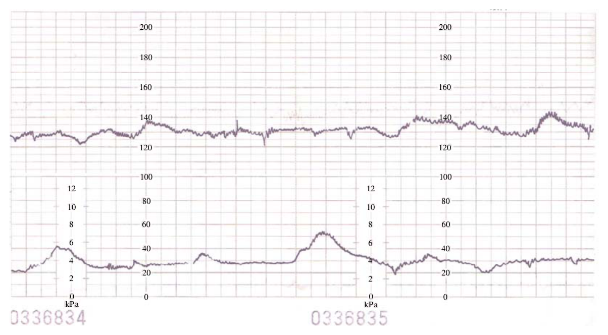

101 年第 1 次護理師產兒科護理學試題與答案
這一頁是民國 101 年第 1 次護理師產兒科護理學的整份歷屆試題，共 80 題，題目與標準答案出自考選部「國家考試試題及測驗式試題答案」開放資料，其中 80 題附有詳解。以下逐題列出題幹、選項與答案；要計時作答或記錄成績，請用線上練習。
考選部原始場次代碼：101030
線上作答這一科 →
全部 80 題
第 1 題
為維持婦女正常陰道生態環境，下列何項衛教正確？
- （A）應使用衛生棉條，以維持內褲的乾爽
- （B）不宜穿著純棉製品內褲，以減少過敏反應
- （C）如廁後都應採溫水陰道灌洗，以減少菌叢滋生
- （D）避免攝取過多碳水化合物，以減少重複性黴菌感染
答案：（D）
詳解與考點
正解：題眼在「維持正常陰道生態環境」與「重複性黴菌感染」——陰道菌叢平衡會受局部濕熱、灌洗與飲食狀態影響；避免攝取過多碳水化合物可作為減少反覆念珠菌感染的衛教方向之一，故選 D。
A：衛生棉條不是維持陰道生態的必要方法，且須注意更換與個人衛生；不能以維持內褲乾爽作為常規建議，故非答案。
B：純棉內褲透氣、吸汗，可減少局部濕熱與刺激，反而是較合宜的選擇，故非答案。
C：常規陰道灌洗會沖掉保護性正常菌叢、改變酸鹼平衡，可能增加感染風險，故非答案。這是最強誘答——清潔方向看似合理，但陰道具有自淨作用，過度灌洗反而破壞生態。
本題考點：陰道菌叢（vaginal microbiota）維持局部生態平衡；陰道灌洗（vaginal douching）會破壞正常菌叢；外陰衛生（vulvar hygiene）重點是透氣、保持乾爽與避免不必要刺激。
第 2 題
有關更年期荷爾蒙補充療法，下列敘述何者錯誤？
- （A）荷爾蒙補充療法為緩解停經症狀，而非預防疾病
- （B）當更年期症狀減輕後，可以在 6~9 個月內逐漸減藥和停藥
- （C）只要使用荷爾蒙補充療法，即可確保更年期婦女身心健康，並永保青春
- （D）2002 年美國國家衛生研究院研究發現，荷爾蒙補充療法與罹患乳癌相關
答案：（C）
詳解與考點
正解：題眼在「荷爾蒙補充療法」與「何者錯誤」——其目的在緩解更年期症狀，必須依個別風險評估使用，並不能保證身心健康或逆轉老化。（C）把治療效果誇大為「確保健康、永保青春」，與治療目的不符，故為應選項。
A：荷爾蒙補充療法主要用於改善更年期相關症狀，而非作為預防所有疾病的萬用措施，故非答案。
B：症狀改善後，治療是否逐步減量與停藥須由醫療人員依症狀及風險評估；此選項的核心方向是避免無必要的長期使用，故非答案。
D：使用荷爾蒙補充療法時必須評估乳房疾病等風險，不能把乳癌風險排除在外，故非答案。這是最強誘答——它提及研究結果而顯得絕對，但題幹問的是明顯違反治療目的的敘述。
本題考點：更年期荷爾蒙補充療法（menopausal hormone therapy）以症狀緩解為目標；治療決策須做個別風險效益評估（risk-benefit assessment）；不得宣稱可保證健康或抗老。
第 3 題
下列有關母奶的保存方式，何者錯誤？
- （A）成熟奶放於冷凍庫，可放置 3 至 4 個月
- （B）成熟奶放於 25℃以下的室溫，可放置 6~8 小時
- （C）成熟奶放於冰箱 4℃內冷藏，不可超過 24 小時
- （D）冰過的奶水不可以使用微波爐加熱
答案：（C）
詳解與考點
正解：題眼在「母奶保存」與「何者錯誤」——保存條件不同會影響母乳可安全使用的時間，冷藏母乳的可保存期間不宜被縮短為僅 24 小時。（C）將 4℃ 冷藏成熟奶說成不可超過 24 小時，與一般母乳儲存原則不符，故為應選項。
A：冷凍可延長成熟奶保存時間，數月內使用是常見的儲存原則，故非答案。
B：室溫保存應受環境溫度與時間限制，題述短時間保存的方向符合減少細菌增生的原則，故非答案。
D：微波加熱可能造成受熱不均與局部過熱，也可能影響母乳成分，不建議使用，故非答案。這是最強誘答——加熱是必要步驟，但正確作法是隔水溫熱並先測試溫度，不是微波。
本題考點：母乳保存（human milk storage）依室溫、冷藏與冷凍分別管理；冷鏈維持（cold chain）可抑制微生物增生；回溫採隔水溫熱，避免微波加熱（microwave heating）。
第 4 題
產後評估深層靜脈血栓，進行伸直腿且足板背側彎曲的試驗稱為：
- （A）希氏試驗（Schultze test）
- （B）霍曼氏試驗（Homan’s test）
- （C）畢夏氏試驗（Bishop’s test）
- （D）貝拉德試驗（Ballard test）
答案：（B）
詳解與考點
正解：題眼在「伸直腿且足板背側彎曲」——這是以足部背屈牽拉小腿肌肉、觀察是否誘發不適的霍曼氏試驗（Homan’s test），用於產後深層靜脈血栓風險的傳統身體評估，故選 B。
A：希氏試驗（Schultze test）不是以足背屈評估下肢靜脈血栓的試驗，故非答案。
C：畢夏氏試驗（Bishop’s test）用於評估子宮頸成熟度，與下肢靜脈血栓無關，故非答案。
D：貝拉德試驗（Ballard test）用於新生兒成熟度評估，與產婦下肢評估無關，故非答案。
本題考點：霍曼氏試驗（Homan’s test）是足背屈相關的傳統徵象；深層靜脈血栓（deep vein thrombosis）須綜合臨床症狀與進一步檢查判定；產後血栓風險評估重點包括下肢疼痛、腫脹與循環狀態。
第 5 題
下列何者為哺乳婦女最佳的避孕方法？
- （A）口服避孕藥
- （B）觀察陰道黏液之分泌
- （C）保險套
- （D）計算安全期
答案：（C）
詳解與考點
正解：題眼在「哺乳婦女」與「最佳避孕方法」——哺乳期月經與排卵恢復時間不一定，宜選不干擾泌乳、可立即使用且效果不依賴週期判讀的方法。（C）保險套為非荷爾蒙屏障避孕法，也可降低性傳染感染風險，故選 C。
A：口服避孕藥的選擇須考量產後時期、哺乳情況與個別血栓風險，不能一概視為此情境的最佳選項，故非答案。
B：陰道黏液法需依週期與分泌型態判讀；哺乳期變化大，可靠性較低，故非答案。
D：安全期法同樣仰賴規律排卵，哺乳期排卵恢復難以預測，故非答案。這是最強誘答——它不需藥物，但「自然」不等於在週期不規則時可靠。
本題考點：哺乳期避孕（contraception during lactation）須考量泌乳與排卵不規則；保險套（condom）為非荷爾蒙屏障法；週期型自然避孕法（fertility awareness methods）在週期不規律時可靠性下降。
第 6 題
母乳中何種成分較配方奶粉含量低？
- （A）乳糖
- （B）乳清蛋白
- （C）不飽和脂肪酸
- （D）鐵鈣濃度
答案：（D）
詳解與考點
正解：題眼在「母乳」與「較配方奶粉含量低」——母乳蛋白質與礦物質總量較低，能降低嬰兒腎臟溶質負荷；其中鐵、鈣的總濃度較配方奶低，故選 D。
A：母乳的乳糖含量相對高，是供應能量的重要醣類，故非答案。
B：母乳以乳清蛋白為主，乳清蛋白比例較高且較易消化，故非答案。
C：母乳含有較多不飽和脂肪酸，有助於神經與視覺發展，故非答案。
本題考點：母乳營養組成（human milk composition）具有高乳糖與乳清蛋白比例；不飽和脂肪酸（unsaturated fatty acids）支持神經發展；礦物質總量較低可減少腎臟溶質負荷（renal solute load）。
第 7 題
黃女士G1P1，剖腹生產後第 2 天，尚未排氣，主訴腹脹不適，目前束腹帶使用中，下列何項獨立性 護理措施最適宜？
- （A）鬆開束腹帶，使腹肌鬆弛，有助於腸蠕動之恢復
- （B）請醫師給予塞劑或灌腸，促進腸蠕動，改善腹脹情形
- （C）協助多翻身，並給予薄荷油擦拭腹部，以促進腸蠕動
- （D）請醫師增加口服軟便劑量，改善腹脹情形
答案：（C）
詳解與考點
正解：題眼在「剖腹生產後第 2 天、尚未排氣、腹脹」及「獨立性護理措施」——術後腸蠕動尚未恢復時，護理人員可先執行不需醫囑的活動與舒適措施以促進蠕動。（C）協助多翻身可增加活動量、促進腸蠕動，故選 C。
A：束腹帶是否調整須同時評估傷口支托、呼吸舒適與疼痛；單以鬆開腹肌來促進腸蠕動不是首要原則，故非答案。
B、D：要求醫師開立塞劑、灌腸或調整軟便劑均屬需醫囑的處置，且應先評估腸音、排氣與腹部症狀，故非答案。這是最強誘答——處置方向似乎能改善排便，錯在它不是此刻可獨立優先執行的措施。
本題考點：術後腸蠕動恢復（postoperative bowel motility）可先以翻身與早期活動促進；獨立性護理措施（independent nursing intervention）不需醫囑；護理過程（nursing process）先評估再決定是否升級處置。
第 8 題
陳女士G2P2，自然生產後第 4~5 天，護理師觸診產婦腹部時發現肌肉張力差，此時應鼓勵作下列何 項產後運動？
- （A）凱格式運動（Kegel’s exercise）
- （B）頸部運動
- （C）仰臥起坐
- （D）膝胸臥式
答案：（B）
詳解與考點
正解：題眼在「自然生產後第 4～5 天」與「腹部肌肉張力差」——此時可由溫和、循序的產後運動開始恢復腹肌張力；（B）頸部運動若結合抬頭動作，可作為早期腹肌收縮的入門練習，故選 B。
A：凱格式運動（Kegel’s exercise）主要訓練骨盆底肌群，適用於骨盆底鬆弛與尿失禁預防，不是本題腹肌張力的直接重點，故非答案。
C：仰臥起坐對腹肌負荷較大，產後初期不宜作為首選，故非答案。這是最強誘答——它最直接使用腹肌，但錯在恢復初期的強度與時機。
D：膝胸臥式主要用於特定產科情境的姿勢處理，不是產後腹肌張力恢復運動，故非答案。
本題考點：產後運動（postpartum exercise）須循序漸進；腹肌張力恢復（abdominal muscle tone）先採低負荷動作；凱格式運動（Kegel’s exercise）主要強化骨盆底肌群。
第 9 題
李女士G1P1，自然生產後第 3 天，向護理師表示：「嬰兒吸吮乳房時，乳頭會痛」，下列護理指導 何者正確？
- （A）告知產後第一週哺餵時乳頭會痛是正常的現象
- （B）教導停止讓嬰兒吸吮乳房
- （C）確定餵奶姿勢及寶寶含乳的姿勢
- （D）教導減少每次餵奶的時間
答案：（C）
詳解與考點
正解：題眼在「嬰兒吸吮時乳頭會痛」——最常見且可立即修正的原因是哺餵姿勢或含乳不良，應先評估並協助調整。（C）確認母親抱持姿勢及嬰兒含乳深度，可減少乳頭受摩擦與壓迫，故選 C。
A：持續疼痛不是應被視為必然的正常現象；以「正常」帶過會延誤修正含乳與處理乳頭損傷，故非答案。
B：直接停止吸吮會中斷有效移乳，且未處理疼痛原因，故非答案。
D：縮短每次哺餵時間不能改善含乳不良，反而可能影響移乳與乳房排空，故非答案。這是最強誘答——它看似能減少疼痛暴露，錯在沒有修正造成疼痛的含乳問題。
本題考點：有效含乳（effective latch）可減少乳頭疼痛；母乳哺餵評估（breastfeeding assessment）先看姿勢與含乳；護理指導（nursing education）應處理原因而非僅縮短哺餵。
第 10 題
情況：朱女士懷孕 39 週，自然產下一男嬰。 朱女士採純母奶哺餵，新生兒出生第 3 天發現有黃疸的情況，經醫師檢查無其他病理性疾病，下列 何者為護理師最合宜的護理指導？
- （A）「這是正常現象，不必擔心」
- （B）「應修正新生兒含乳的姿勢，減少哺餵母乳次數」
- （C）「單純的母乳性黃疸，可能持續到 2 個月才會完全消退」
- （D）「應等黃疸消退後才開始哺餵比較安全」
答案：（A）
詳解與考點
正解：本題的關鍵線索是足月新生兒出生第 3 天、採純母奶哺餵，且醫師已排除其他病理性疾病。這符合出生後初期常見的生理性新生兒黃疸情境，因此先給予家長適當安撫，說明此為可見的正常現象，最符合（A）的方向，故選 A。
B：減少母乳哺餵次數會降低攝取與排便機會，不利膽紅素排出；護理指導應支持有效哺餵與觀察，而非減少餵食，故非答案。
C：母乳性黃疸是容易混淆的名詞，但題幹只有早期黃疸且已排除病理性問題，不能據此直接套用特定病程長度作為首要指導，故非答案。這是最強誘答：它使用了看似相近的診斷名稱，分辨關鍵在於本題要處理的是出生初期、已排除病理因素後的安撫與支持哺餵。
D：等待黃疸消退才開始母乳哺餵會延後攝取，與促進排便及支持親子哺餵的原則相反，故非答案。
本題考點：生理性新生兒黃疸（physiologic neonatal jaundice）常在出生後初期出現；母乳哺餵支持（breastfeeding support）重點是有效攝取與觀察；黃疸追蹤（jaundice surveillance）仍須依病人的進食、排泄、活力與醫囑持續評估。
第 11 題
情況：朱女士懷孕 39 週，自然產下一男嬰。 朱女士要出院了，詢問新生兒沐浴的相關事項，下列回答何者不適當？
- （A）「為避免吐奶，先洗澡再餵奶比較恰當」
- （B）「要經常幫新生兒洗頭髮，以避免頭皮上鱗屑的形成」
- （C）「要控制環境的溫度，維持新生兒體溫是很重要的」
- （D）「新生兒沐浴應先洗頭髮再洗臉部，最後洗軀幹」
答案：（D）
詳解與考點
正解：本題問新生兒沐浴何者不適當，關鍵是清潔順序應先處理最乾淨、最需要避免污染的臉部與眼周，再清洗頭髮及軀幹。（D）先洗頭髮再洗臉，會把頭皮與髮際的污物或清潔用品帶向臉部，違反由清潔處至較髒處的原則，故選 D。
A：為避免剛餵食後胃內容物逆流，安排在餵食前沐浴較合宜，故非答案。
B：規律以溫和方式清潔頭皮有助減少鱗屑堆積，重點是動作輕柔、保暖並依皮膚狀況調整。這是最強誘答——「經常」容易被理解為過度清洗，但它沒有顛倒沐浴順序或違反安全原則，故非答案。
C：新生兒體溫調節能力尚未成熟，沐浴時維持適當環境溫度與縮短暴露時間可預防失溫，故非答案。
本題考點：新生兒沐浴（newborn bathing）的清潔順序採由清潔到較髒處；體溫調節（thermoregulation）須以保暖與減少暴露為原則；餵食與沐浴時機應避開剛餵食後。
第 12 題
下列何者不屬於產後婦女的退行性變化（retrogressive change）？
- （A）惡露排出
- （B）子宮底下降
- （C）乳汁分泌
- （D）陰道及會陰裂傷修復
答案：（C）
詳解與考點
正解：題眼在「不屬於退行性變化」——產後退行性變化是孕期增大的生殖器官逐漸回復孕前狀態；乳汁分泌是建立哺乳功能的進行性變化。（C）乳汁分泌不是組織回復的退行過程，故選 C。
A：惡露排出反映子宮內膜修復及產後組織排出，屬退行性變化的一部分，故非答案。
B：子宮底逐漸下降是子宮復舊的表現，故非答案。
D：陰道及會陰裂傷修復是產後生殖道逐步恢復的過程，故非答案。
本題考點：產後復舊（postpartum involution）包括子宮底下降與惡露變化；退行性變化（retrogressive change）指回復孕前狀態；泌乳（lactation）屬進行性生理調適。
第 13 題
林女士懷孕 39 週，3 小時前剛以自然生產方式娩出一男嬰，評估其新生兒身體成熟度，下列敘述何 者最正確？
- （A）體表皮膚粉紅光滑可見到血管，腳底沒有皺褶
- （B）體表胎毛稀薄，耳翼扁平，腳前部有橫的皺褶
- （C）體表胎毛豐富，陰囊有些皺褶，睪丸開始下降
- （D）體表皮膚乾燥、脫皮看不見血管，睪丸已下降
答案：（D）
詳解與考點
正解：題眼在「懷孕 39 週」與「新生兒身體成熟度」——足月男嬰的外觀應呈現較成熟皮膚、減少胎毛及已下降的睪丸。（D）皮膚乾燥、脫皮且看不見明顯血管，加上睪丸已下降，最符合成熟度較高的足月新生兒，故選 D。
A：皮膚薄而可見血管、足底無皺褶較偏向未成熟新生兒，故非答案。
B：耳翼扁平及足底僅前部皺褶顯示成熟度較低，故非答案。
C：胎毛豐富、陰囊皺褶少且睪丸僅開始下降，也較偏向未成熟表徵，故非答案。這是最強誘答——它已出現部分陰囊皺褶，容易被誤認足月；判準須合看胎毛、皮膚與睪丸下降。
本題考點：新生兒成熟度評估（newborn maturity assessment）綜合皮膚、胎毛、足底皺褶與生殖器；足月兒（term infant）呈較成熟皮膚與已下降睪丸；貝拉德評估（Ballard assessment）重視多項徵象整合。
第 14 題
當新生兒的生命徵象（體溫、脈搏及呼吸）出現下列何種情形時，需立即通知醫師處理？
- （A）36.5℃、90、20
- （B）36.6℃、120、30
- （C）36.8℃、130、45
- （D）37.1℃、150、60
答案：（A）
詳解與考點
正解：題眼在「新生兒生命徵象」與「立即通知醫師」——應先辨識是否出現危及生命安全的呼吸或循環異常。（A）的呼吸 20 次／分及脈搏 90 次／分明顯偏慢，可能表示呼吸抑制或循環問題，屬生命安全優先層級，故選 A。
B：此組體溫、脈搏與呼吸未呈現題幹所指的明顯緊急異常，故非答案。
C：此組生命徵象在新生兒常見的生理波動範圍內，仍應持續評估，但非題目的立即通報情境，故非答案。
D：呼吸 60 次／分雖在上緣，應配合呼吸費力、膚色與持續性評估；單憑此組數值不如（A）顯示明確緊急性，故非答案。這是最強誘答——它的呼吸數接近上限，分辨關鍵在於（A）同時有呼吸與脈搏過慢。
本題考點：新生兒生命徵象（newborn vital signs）須合併呼吸、脈搏與體溫判讀；呼吸抑制（respiratory depression）屬生命安全優先；異常徵象應及時通報並持續評估。
第 15 題
下列妊娠期間感染 TORCH 症候群之敘述，何者正確？
- （A）孕期 18 週內，胎盤內滋養層細胞對胎兒有保護作用，故感染梅毒螺旋體不會影響胎兒健康
- （B）若未具德國麻疹抗體且確定未懷孕者，可接種疫苗，但是須在接種 2 週後才可懷孕
- （C）為避免感染巨細胞病毒，孕婦應避免與貓狗等寵物糞便接觸的機會
- （D）疱疹病毒（HSV-II）多是經由胎盤傳給胎兒，易導致胎兒肝脾腫大，甚至死亡的後果
答案：（A）
詳解與考點
正解：題眼在「TORCH 症候群」與「何者正確」——題目考的是不同病原的母胎傳播特性。官方答案為 A；依本題採用的傳統考點，梅毒螺旋體在孕早期尚受胎盤屏障影響，較不易造成胎兒感染，故選 A。惟此說法涉及孕週與感染風險的時效性細節，實務上孕期疑似或確診梅毒均應立即依現行產科與感染指引評估處置。
B：未具德國麻疹抗體者可於未懷孕時接種，但接種後的避孕期間不能以題述短時間概括，故非答案。
C：巨細胞病毒主要經體液接觸傳播；避免接觸貓糞較是弓形蟲感染的預防重點，故非答案。這是最強誘答——它同樣提到孕婦與動物糞便，錯在把病原的預防措施對錯對象。
D：HSV-II 主要在分娩時經產道垂直傳播，而非多數經胎盤傳播，故非答案。
本題考點：TORCH 感染（TORCH infections）須辨識各病原的傳播途徑；弓形蟲病（toxoplasmosis）與貓糞暴露相關；單純疱疹病毒（HSV）常見產道垂直傳播。
第 16 題
心臟病孕婦於懷孕期間應避免：
- （A）高蛋白飲食
- （B）適度的活動
- （C）體重過重
- （D）子宮頸抹片檢查
答案：（C）
詳解與考點
正解：題眼在「心臟病孕婦」與「應避免」——孕期心血管負荷增加，體重過重會進一步增加循環與心臟負擔。（C）體重過重應避免，故選 C。
A：營養攝取須依個別病情規劃，適當蛋白質有助孕期組織需求，不能一概避免，故非答案。
B：在醫療人員評估容許下，適度活動有助維持功能；應避免的是過度勞累，故非答案。這是最強誘答——心臟病確實需節省心臟負荷，但「適度」活動不等於過度運動。
D：子宮頸抹片是否施作應依篩檢需要與產科評估決定，心臟病本身不是當然禁忌，故非答案。
本題考點：心臟病孕婦照護（pregnancy with heart disease）重視降低心臟負荷；體重管理（weight management）避免額外循環負擔；活動建議（activity recommendation）須依病情採適度原則。
第 17 題
情況：張女士，懷孕 31 週，晨起上廁所時，突然發現自己陰道流出鮮血，由於沒有任何疼痛現象，因此沒有立即就診，而以電話諮詢醫院護理師。 張女士較有可能的問題是？
- （A）前置胎盤（placenta previa）
- （B）胎盤早期剝離（abruptio placenta）
- （C）脅迫性流產（threatened abortion）
- （D）妊娠毒血症（eclampsia）
答案：（A）
詳解與考點
正解：關鍵在懷孕 31 週突然出現無痛性鮮紅色陰道出血。妊娠後期有這組線索時，要優先考慮胎盤位於子宮下段、靠近或覆蓋子宮頸內口的前置胎盤（placenta previa）；出血未必伴隨腹痛，故選 A。
B：胎盤早期剝離（abruptio placenta）較常見腹痛、子宮壓痛或持續緊繃等表現，與本題無痛性出血的型態不同。這是最強誘答——兩者都可能在妊娠後期出血，分辨關鍵在有無疼痛與子宮刺激徵象，故非答案。
C：脅迫性流產（threatened abortion）是妊娠早期出血的鑑別方向，無法優先解釋已懷孕 31 週的情境，故非答案。
D：妊娠毒血症為舊稱，嚴重的子癇前症／子癇以高血壓相關徵象，嚴重時可有痙攣為主，並非此題無痛性鮮紅色出血的典型表現，故非答案。
本題考點：產前出血（antepartum hemorrhage）先以疼痛與否分流；前置胎盤的典型線索是妊娠後期無痛性陰道出血；胎盤早期剝離則較常合併腹痛與子宮刺激徵象。
第 18 題
情況：張女士，懷孕 31 週，晨起上廁所時，突然發現自己陰道流出鮮血，由於沒有任何疼痛現象，因此沒有立即就診，而以電話諮詢醫院護理師。 張女士詢問護理師目前應該如何處理，合宜的回答是？
- （A）「您先臥床休息並觀察是否繼續出血，若 3 小時後仍繼續出血，再到醫院來」
- （B）「若是合併有腹部疼痛時，您就應該到醫院來」
- （C）「請您休息並觀察症狀，若有羊水流出，則應立即到醫院來」
- （D）「依您的症狀看來，應儘早就醫檢查及治療」
答案：（D）
詳解與考點
正解：本題的決定線索是懷孕 31 週已發生陰道鮮血、且沒有疼痛。產前出血原因尚未釐清前，生命安全與生理需求優先於在家觀察；即使無腹痛，仍須儘早由醫療人員評估出血量、母胎狀況與可能病因，故選 D。
A：以 3 小時作為等待門檻沒有依據，會延遲產前出血的評估與處置，故非答案。
B：把「是否腹痛」當作就醫條件，會漏掉前置胎盤等可無痛出血的情況。這是最強誘答——腹痛確實是胎盤早期剝離的重要訊號，但無痛性鮮血本身已足以啟動就醫評估，故非答案。
C：等待羊水流出才就醫同樣跳過現有的出血警訊，與安全優先序不符，故非答案。
本題考點：產前出血（antepartum hemorrhage）的處置先取安全優先；無痛性陰道出血仍可能有嚴重產科原因；護理電話諮詢須避免以單一症狀消失或未出現作為延後就醫的條件。
第 19 題
子宮頸抹片檢查不適合用於下列何種情況的婦女？
- （A）急性子宮頸炎
- （B）月經結束後第 5 天
- （C）子宮頸曾行錐狀手術（conization）
- （D）3 天前有性生活
答案：（A）
詳解與考點
正解：題眼在「子宮頸抹片」與「不適合」——採檢需要避免明顯發炎、出血或干擾檢體判讀的情況。（A）急性子宮頸炎會造成發炎細胞與分泌物干擾判讀，應先評估與治療發炎問題，故選 A。
B：月經結束後是較適合採檢的時機，因可減少經血干擾，故非答案。
C：曾接受子宮頸錐狀切除者仍可能需要依追蹤計畫接受採檢，並非一律不適合，故非答案。
D：性生活可能影響檢體品質，通常應依採檢前指示避免；但相較急性發炎，題幹所述時間不是絕對不適合採檢的情況，故非答案。這是最強誘答——它確實關係到檢體品質，但判準是採檢前準備，而非急性感染的處置優先序。
本題考點：子宮頸抹片檢查（Pap smear）要求可判讀的細胞檢體；急性子宮頸炎（acute cervicitis）應先處理發炎；篩檢前準備（screening preparation）須避免可能干擾檢體的因素。
第 20 題
有關子宮頸癌婦女接受體腔內放射線治療的護理計畫，下列何者錯誤？
- （A）限制孕婦及孩童訪客
- （B）採高蛋白高纖維飲食
- （C）治療期間鼓勵執行床上運動
- （D）評估血液檢查白血球在 3000/mm3 以上及血紅素在 10 gm%以上才可以接受治療
答案：（B）
詳解與考點
正解：題眼在「子宮頸癌、體腔內放射線治療」與「何者錯誤」——治療期間需兼顧放射線安全與腸道保護；高纖維飲食會增加腸蠕動及排便需求，不利於維持施源器位置。（B）採高蛋白高纖維飲食不適當，故為應選項。
A：體腔內放射線治療期間應限制孕婦及孩童訪客，以降低不必要的放射線暴露，故非答案。
C：治療期間的床上運動有助維持循環並降低活動受限的不適，前提是不影響施源器位置，故非答案。
D：治療前會依血液檢查及整體狀況評估是否適合接受治療，故非答案。官方答案為 B；惟題述特定檢驗數值屬治療門檻的時效性細節，實務應以現行放射腫瘤科評估為準。
本題考點：體腔內放射線治療（brachytherapy）重視施源器位置與放射線安全；低渣飲食（low-residue diet）可減少腸蠕動與排便；治療適合度（treatment readiness）須整合血液檢查與臨床評估。
第 21 題
王女士罹患上皮性卵巢癌，已完成手術和化學治療，為了追蹤腫瘤復發可能性，須監測下列何種腫 瘤指標？
- （A）鱗狀細胞癌抗原（SCC-AG）
- （B）血清 CA-153
- （C）人類絨毛膜性腺激素（HCG）
- （D）血清 CA-125
答案：（D）
詳解與考點
正解：題眼在「上皮性卵巢癌」及「追蹤腫瘤復發」——血清 CA-125 是上皮性卵巢癌治療後常用的追蹤腫瘤標記之一，故選 D。
A：鱗狀細胞癌抗原（SCC-AG）主要與鱗狀細胞癌相關，不是上皮性卵巢癌的主要追蹤標記，故非答案。
B：CA-153 較常用於乳癌病程追蹤，不是本題疾病的首選，故非答案。
C：人類絨毛膜性腺激素（HCG）主要用於妊娠相關與部分生殖細胞腫瘤評估，與上皮性卵巢癌不符，故非答案。這是最強誘答——卵巢腫瘤也可能與 HCG 有關，但必須先區分腫瘤的組織型態。
本題考點：CA-125（cancer antigen 125）可用於上皮性卵巢癌（epithelial ovarian cancer）追蹤；腫瘤標記（tumor marker）須依組織型態選擇；治療後監測（post-treatment surveillance）應結合症狀、影像與趨勢判讀。
第 22 題
某婦女目前服用口服避孕藥，因罹患念珠球菌陰道炎，外陰部搔癢，有白色乳酪狀分泌物，下列照 護措施何者除外？
- （A）口服抗生素 metronidazole（Flagyl）
- （B）教導陰道塞劑使用方法
- （C）外陰部塗抹類固醇藥膏
- （D）暫停服用口服避孕藥
答案：（A）
詳解與考點
正解：題眼在「白色乳酪狀分泌物、外陰搔癢」與「除外」——這組表現指向念珠球菌陰道炎，判準是治療須針對真菌。metronidazole 是針對厭氧菌與滴蟲感染的藥物，並非念珠球菌的常規治療，故 A 為應選項。
B：教導（B）陰道塞劑的正確使用方法，可使局部抗黴菌藥物依處方發揮療效，是合宜的護理指導，故非答案。
C：會陰搔癢時，依醫囑短期於外陰使用（C）類固醇藥膏可減輕局部發炎與搔癢，但不能取代抗黴菌治療，故非答案。這是最強誘答——它看似會降低抵抗力而不宜使用，關鍵在於題目所述是外陰局部、依醫囑的症狀緩解處置。
D：口服避孕藥可能改變陰道環境、增加念珠球菌感染的相關風險；評估後暫停（D）口服避孕藥並改採其他避孕方式，是可考慮的處置，故非答案。
本題考點：念珠球菌陰道炎（vulvovaginal candidiasis）的典型線索是搔癢與白色乳酪狀分泌物；抗感染藥物須依病原選擇，metronidazole 不以念珠球菌為標的；局部症狀處置與病因治療須分開判讀。
第 23 題
陰道內診後，坐骨棘假想連線（station）為 -2，其意義為胎兒先露部到達那個位置？
- （A）坐骨棘連線上方 2 指
- （B）坐骨棘連線下方 2 指
- （C）坐骨棘連線上方 2 公分
- （D）坐骨棘連線下方 2 公分
答案：（C）
詳解與考點
正解：題眼在「station -2」——胎頭高度（fetal station）以坐骨棘連線為 0 點，負值代表先露部仍在連線上方，數值以公分表示。-2 即胎兒先露部位於坐骨棘連線上方 2 公分，故選 C。
A：將（A）上方 2 指當作 station 的單位錯誤；胎頭高度以公分記錄，不以指寬估算，故非答案。
B：下方代表正值，與（B）-2 的負號不符，故非答案。
D：雖正確使用公分，但（D）下方 2 公分應記為 +2，故非答案。這是最強誘答——它只把方位顛倒，分辨關鍵是先以坐骨棘為 0，再判讀負號為上方。
本題考點：胎頭高度（fetal station）以坐骨棘（ischial spines）為 0；負值表示先露部在坐骨棘上方；正值表示在坐骨棘下方，單位為公分。
第 24 題
下列何項描述是目前產科護理發展之趨勢？
- （A）鼓勵實施親子同室，限制訪客以預防新生兒感染
- （B）積極採用產科醫療或藥物，如無痛分娩減輕產痛
- （C）尊重孕婦自主與決策權，協助規劃其生產計畫書
- （D）產後 2~3 天當產婦獲得足夠休息後開始母奶哺餵
答案：（C）
詳解與考點
正解：題眼在「目前產科護理發展之趨勢」——判準是以孕婦為中心的照護，重視知情、選擇與共同決策。協助孕婦依自身價值與醫療資訊規劃生產計畫書，正是尊重自主與個別化生產照護的作法，故選 C。
A：親子同室有助於親子互動與母乳哺餵；但以（A）限制訪客作為其主要趨勢，將感染管制簡化為一律限制，未呈現以家庭為中心與個別評估的精神，故非答案。
B：無痛分娩可作為一種選擇，但（B）積極採用醫療或藥物不等於現代產科護理的核心；應先提供資訊並尊重孕婦決定，故非答案。這是最強誘答——它的確能減輕部分產婦疼痛，錯在把單一醫療介入當成普遍趨勢。
D：母乳哺餵宜及早建立，並非等到（D）產後數日、休息充分才開始，故非答案。
本題考點：以孕婦為中心照護（woman-centered care）重視自主與共同決策；生產計畫書（birth plan）用於表達偏好並促進溝通；家庭為中心照護（family-centered care）不等於例行限制家屬參與。
第 25 題
自然生產前，醫護人員給予填寫同意書，並解說注意事項，是針對產婦的那一項權利？
- （A）隱私權
- （B）知曉同意權
- （C）公平正義權
- （D）不傷害權
答案：（B）
詳解與考點
正解：題眼在「填寫同意書」與「解說注意事項」——這不是單純取得簽名，而是讓產婦了解處置性質、可能風險與替代方案後作出決定，屬於知情同意權，故選 B。
A：隱私權保障的是個人身體、病歷及就醫資訊不被不當揭露；（A）與處置前說明及同意的重點不同，故非答案。
C：公平正義權強調醫療資源與照護不受不當歧視；（C）不是本題同意書程序所直接保障的權利，故非答案。
D：不傷害原則要求醫療人員避免可預見的傷害；雖與安全照護相關，但（D）不能取代病人自行選擇的同意程序，故非答案。這是最強誘答——它同樣屬醫療倫理原則，分辨關鍵在於題幹問的是「說明後由產婦決定」的權利。
本題考點：知情同意（informed consent）包含充分說明、理解與自主決定；隱私權（privacy）保護個人資訊與身體界限；不傷害原則（nonmaleficence）與自主原則（autonomy）須分別辨識。
第 26 題
鄭女士產檢時向護理師表示陰道有白色分泌物且會陰有搔癢的情形，此時護理指導何者最正確？
- （A）此為正常現象，不需任何處理
- （B）此為正常現象，可採陰道灌洗減少不適
- （C）此為異常現象，可請醫生再詳細檢查
- （D）此為異常現象，可用硼酸沖洗會陰
答案：（C）
詳解與考點
正解：題眼在「白色分泌物」合併「會陰搔癢」——孕期分泌物可增加，但若伴隨明顯搔癢，應先排除陰道感染，不能直接視為正常生理現象。最適當的是請醫師進一步檢查、確認病因後治療，故選 C。
A：把（A）搔癢性分泌物一概視為正常，會延誤感染評估，故非答案。
B：陰道灌洗會改變正常菌叢，且可能將病原推向上生殖道；（B）不是孕期陰道不適的常規自我處理，故非答案。這是最強誘答——它看似能立即清除分泌物，實際上可能破壞陰道微生態。
D：未確認病因前自行以（D）硼酸沖洗會陰，可能造成局部刺激，亦非標準護理指導，故非答案。
本題考點：孕期陰道感染評估（vaginal infection assessment）須區分生理性分泌物與伴隨搔癢、異味或疼痛的異常症狀；陰道灌洗（douching）可能破壞正常菌叢；護理過程先評估再給予病因性處置。
第 27 題
生產準備課程所介紹的各種減輕生產不適的方法，何者錯誤？
- （A）給予薦骨重壓或按摩
- （B）可坐在生產球上
- （C）給予冷、熱敷
- （D）抑制情緒、避免喊叫
答案：（D）
詳解與考點
正解：題眼在「減輕生產不適」與「錯誤」——非藥物產痛照護的判準是促進放鬆、因應與產婦表達，而非壓抑情緒。要求產婦抑制情緒、避免喊叫，可能增加緊張與無助感，故 D 為應選項。
A：在適當部位給予（A）薦骨重壓或按摩，可減輕部分腰背部不適並提供觸覺支持，故非答案。
B：依產婦狀況使用（B）生產球，可促進舒適姿勢與骨盆活動，故非答案。
C：冷、熱敷可依產婦感受運用於不同部位，作為（C）非藥物舒緩方法，故非答案。
本題考點：非藥物疼痛緩解（nonpharmacological pain relief）包括觸覺支持、姿勢活動與冷熱療法；情緒支持（emotional support）應鼓勵表達與參與；焦慮會增加疼痛知覺，壓抑情緒不是減痛策略。
第 28 題
下列何種方法可判別胎兒肺部的成熟度？
- （A）杜卜勒血流速度波形
- （B）絨毛取樣術
- （C）羊膜穿刺術
- （D）臍帶穿刺術
答案：（C）
詳解與考點
正解：題眼在「判別胎兒肺部成熟度」——判準是取得羊水後分析其中與肺表面活性物質相關的成熟指標。羊膜穿刺術可取得羊水供檢驗，故選 C。
A：杜卜勒血流速度波形評估的是母胎血流與循環阻力，不直接檢測（A）肺部成熟度，故非答案。
B：絨毛取樣術取得胎盤絨毛，主要用於特定遺傳或染色體檢查，不能以（B）羊水肺成熟指標判讀，故非答案。
D：臍帶穿刺術取得胎兒血液，適用於特定胎兒血液或遺傳問題評估；相較之下，肺成熟度所需檢體是羊水，故（D）非答案。這是最強誘答——它同為侵入性產前檢查，分辨關鍵在於先對應「要測肺成熟」所需的羊水檢體。
本題考點：羊膜穿刺術（amniocentesis）可取得羊水；胎兒肺成熟度（fetal lung maturity）以羊水中表面活性物質相關指標判讀；杜卜勒超音波（Doppler ultrasonography）主要評估血流而非肺成熟。
第 29 題
懷孕時母體的生理變化會影響藥物的代謝，下列敘述何者正確？
- （A）胃的排空和腸的蠕動增加，藥物吸收率會減緩
- （B）腎臟血流和腎絲球過濾率增加，藥物易被排泄
- （C）懷孕時肝臟藥物代謝酵素活性減少，因此藥物不易被代謝
- （D）血漿蛋白濃度增加，與藥物結合比例增加，降低藥物療效
答案：（B）
詳解與考點
正解：題眼在「懷孕時母體生理變化」與「藥物代謝」——判準要分別看吸收、分布、肝代謝與腎排泄。孕期腎血流量及腎絲球過濾率增加，部分經腎排出的藥物清除會增加，故選 B。
A：孕期胃排空與腸蠕動通常減慢，不是（A）增加；因此此項對生理方向與推論均不正確，故非答案。
C：孕期對不同肝臟藥物代謝酵素的影響並不一致，不能一概說（C）酵素活性減少、藥物都不易代謝，故非答案。
D：孕期血漿蛋白濃度傾向降低而非增加，藥物蛋白結合比例與游離型比例會受影響；（D）所述方向錯誤。這是最強誘答——它抓到「蛋白結合影響藥效」這個概念，卻把孕期蛋白濃度變化寫反。
本題考點：藥物動力學（pharmacokinetics）包含吸收、分布、代謝與排泄；腎絲球過濾率（glomerular filtration rate）增加可加速部分藥物清除；孕期藥物處置須依個別藥物特性監測。
第 30 題
情況：丁女士，30 歲，3 年前結婚，避孕半年後即計畫懷孕，但都未如願。因月經已延遲 3 星期未來潮，而至婦產科門診求診。 丁女士經醫師診察及尿液驗孕後證實已懷孕，下列何項敘述符合丁女士之狀況？
- （A）以雷奧波德氏操作法（Leopold's maneuvers）確認出子宮體不對稱的脹大情形
- （B）以陰道超音波檢查妊娠囊確實存在子宮內
- （C）以腹部超音波掃描出胎兒心臟及心跳
- （D）以杜卜勒（Doppler）聽診器可測得臍血流雜音
答案：（B）
詳解與考點
正解：月經延遲 3 星期且尿液驗孕陽性，指向非常早期的妊娠確認。此時以陰道超音波檢查子宮內是否有妊娠囊，可同時確認妊娠位置，較符合目前階段可取得的直接證據，故選 B。
A：雷奧波德氏操作法（Leopold's maneuvers）用於腹部觸診胎兒的胎位、胎向與先露部位，須在子宮與胎兒可由腹部辨識時才有意義，不適合用來確認極早期妊娠，故非答案。
C：腹部超音波看到胎兒心臟及心跳需要較進展的妊娠影像條件；在本題階段，先確認子宮內妊娠囊較合宜。這是最強誘答——胎心活動是可靠的妊娠證據，但差別在檢查方式與目前妊娠早期的可偵測性，故非答案。
D：杜卜勒（Doppler）聽診臍血流屬較後期的胎兒評估，不是尿液驗孕剛陽性時的首選確認方法，故非答案。
本題考點：早期妊娠確認（early pregnancy confirmation）先確認子宮內妊娠位置；陰道超音波（transvaginal ultrasonography）較適合早期影像評估；雷奧波德氏操作法與杜卜勒聽診均屬較後期的胎兒評估工具。
第 31 題
情況：丁女士，30 歲，3 年前結婚，避孕半年後即計畫懷孕，但都未如願。因月經已延遲 3 星期未來潮，而至婦產科門診求診。 若丁女士的最後一次月經為 12 月 20 日，以內格萊氏法則（Nägele's rule）推算出其預產期應為明年 何時？
- （A）7 月 17 日
- （B）7 月 27 日
- （C）9 月 17 日
- （D）9 月 27 日
答案：（D）
詳解與考點
正解：本題要以最後一次月經首日套用內格萊氏法則（Nägele's rule）。公式為預產期＝最後一次月經首日＋7 日－3 個月；代入 12 月 20 日，先加 7 日得 12 月 27 日，再減 3 個月得明年 9 月 27 日，故選 D。
A：7 月 17 日同時把月份與日期都算錯，沒有依公式先保留 12 月 20 日再加 7 日，故非答案。
B：7 月 27 日雖保留了加 7 日後的日期，但月份扣減方向錯誤，故非答案。
C：9 月 17 日月份正確，卻漏了先加 7 日這一步。這是最強誘答——它只差在日期，分辨關鍵是先完成 12 月 20 日＋7 日＝12 月 27 日，再做月份換算，故非答案。
本題考點：內格萊氏法則（Nägele's rule）以最後一次月經首日推估預產期；計算順序為先加 7 日再減 3 個月；日期跨年時要同時確認月份與年份。
第 32 題
情況：丁女士，30 歲，3 年前結婚，避孕半年後即計畫懷孕，但都未如願。因月經已延遲 3 星期未來潮，而至婦產科門診求診。 丁女士知道懷孕後，即表示她原已計劃要出國考察半年，現在懷孕的時機很不恰當，真不知道是留 還是放棄。門診護理師面對丁女士的反應，最適當的處理為何？
- （A）基於鼓勵生育的政策，請她不要胡思亂想
- （B）這是正常的矛盾反應，應以接受的態度傾聽她的想法
- （C）請她考慮清楚，若有需要可協助安排人工流產術
- （D）這是不正常的產前憂鬱症前兆，應轉診精神科予以心理輔導
答案：（B）
詳解與考點
正解：關鍵在丁女士原先期待懷孕，卻發現它與出國半年的計畫衝突而感到猶豫。此類對懷孕的矛盾感受可屬正常適應反應，護理人員應先以接受、傾聽與澄清感受建立治療性關係，讓她依自己的價值與資訊作決定，故選 B。
A：以生育政策要求她不要多想，否定其感受並侵害生育自主，故非答案。
C：人工流產可在充分評估與提供資訊後成為可討論的醫療選項，但此刻直接安排處置，跳過了傾聽、評估與自主決策的護理過程。這是最強誘答——它表面上提供協助，實際上把護理師的行動放在個案尚未表達清楚需求之前，故非答案。
D：僅憑一次對時機的矛盾感受就判為產前憂鬱症前兆，屬過早病理化，故非答案。
本題考點：懷孕適應（pregnancy adaptation）可出現矛盾感受；治療性溝通（therapeutic communication）先接納與傾聽，再評估需求；生育自主（reproductive autonomy）須由個案依充分資訊作決定。
第 33 題
江女士第一胎，目前子宮頸開 10 公分，胎頭高度為+1，有便意感，此時最合宜之護理措施為何？
- （A）運用呼吸方法以避免用力
- （B）給予氧氣
- （C）教導用力
- （D）按摩腹部皮膚以轉移其注意力
答案：（C）
詳解與考點
正解：題眼在「子宮頸開 10 公分、胎頭 +1、有便意感」——完全開張合併胎頭下降與排便感，表示已進入第二產程，應配合宮縮教導有效用力，故選 C。
A：運用呼吸避免用力適用於子宮頸尚未完全開張、需要避免過早用力時；本題已（A）開 10 公分，故非答案。
B：未見胎兒缺氧或產婦低氧的線索，例行給予（B）氧氣不是此刻最合宜措施，故非答案。
D：按摩可作為舒適措施，但在完全開張且有下降徵象時，（D）不能取代協助產婦有效用力的優先處置。這是最強誘答——它確實可能轉移疼痛注意力，錯在忽略第二產程的明確進展訊號。
本題考點：第二產程（second stage of labor）自子宮頸完全開張至胎兒娩出；胎頭高度（fetal station）上升代表先露部下降；有效用力（bearing down）須配合完全開張與宮縮時機。
第 34 題
下列有關催產素 Oxytocin 使用之敘述，何者正確？
- （A）胎心率過慢時仍可繼續使用，但須密切觀察
- （B）胎心率變異性減速時，應立即停止使用
- （C）可連續滴注 72 小時，漸進性增加劑量
- （D）因具利尿作用，易發生尿崩之合併症
答案：（B）
詳解與考點
正解：題眼在「催產素」與「胎心率變異性減速」——催產素可能造成子宮過度刺激，進而影響胎盤灌流；出現非令人安心的胎心率變化時，首要措施是停止催產素滴注並立即評估，故選 B。
A：胎心率過慢是胎兒可能缺氧的警訊，不應繼續（A）催產素而僅密切觀察，故非答案。
C：催產素滴注應依子宮收縮與胎兒狀況調整，不能預先以（C）連續 72 小時作為常規，故非答案。
D：催產素的結構與抗利尿激素相近，大量或長時間使用反而須留意水中毒等水分平衡問題，不是（D）利尿造成尿崩，故非答案。這是最強誘答——它抓到催產素與水分調節有關，卻把作用方向顛倒。
本題考點：催產素（oxytocin）可增強子宮收縮；胎兒心率監測（fetal heart rate monitoring）出現異常時先停止可能加劇子宮刺激的藥物；子宮過度刺激（uterine tachysystole）可能降低胎盤灌流。
第 35 題
下列何項不是剖腹產可能的合併症？
- （A）肢體血栓靜脈炎
- （B）腹腔粘連
- （C）肛門瘻管
- （D）傷口感染
答案：（C）
詳解與考點
正解：題眼在「不是剖腹產可能的合併症」——剖腹產是腹部與子宮的手術，風險集中在手術傷口、感染、術後血栓與腹腔沾黏。肛門瘻管屬肛門直腸的病變，與剖腹產的手術解剖位置無關，故 C 為應選項。
A：術後活動減少加上產褥期本身的凝血傾向會提高靜脈血栓風險，因此（A）肢體血栓靜脈炎可能發生，故非答案。
B：腹腔手術後組織修復過程可能形成沾黏，因此（B）腹腔粘連是可能的遠期合併症，故非答案。這是最強誘答——它不像感染或血栓那樣立即出現，考生容易因「不是術後馬上發生」而誤判為非合併症；分辨關鍵是沾黏本來就屬腹腔手術的遠期風險。
D：腹部切口即手術傷口，因此（D）傷口感染是剖腹產後必須監測的併發症，故非答案。
本題考點：剖腹產（cesarean birth）的術後風險包括傷口感染（surgical site infection）、靜脈血栓栓塞（venous thromboembolism）與沾黏（adhesion）；合併症判讀須先對照手術涉及的解剖位置。
第 36 題
主訴陣痛厲害無法忍受，希望醫生能立即提供其無痛分娩的處置，護理措施為何？
- （A）向吳女士解釋，目前產程尚無法採用無痛分娩，提供其他減輕產痛的護理措施
- （B）協助醫師準備無痛分娩之相關配備與措施，並向吳女士解釋可能的反應
- （C）根據吳女士宮縮壓力較低的情況研判，有誇大產痛的可能，因此宜提供心理支持
- （D）向吳女士建議採用局部會陰浸潤法（local perineal infiltration）較適合其目前的狀況
答案：（A）
詳解與考點
正解：本題的官方答案為 A，命題把子宮頸口開 3 公分、宮縮每次 30～40 秒視為尚未可採用無痛分娩的早期產程，故先提供其他減輕產痛的護理措施。惟現行分娩鎮痛不應只以固定子宮頸開度作為門檻；在無禁忌症時，仍須依母胎狀況、產婦意願與麻醉評估決定。此題答案與現行時機判準有爭點，以下依官方答案的命題邏輯，故選 A。
B：即使產婦表達鎮痛需求，也應先完成母胎與麻醉相關評估，再決定適當方法；直接進入配備準備，跳過了評估與共同決策，故非本題答案。
C：疼痛是病人的主觀經驗，不能只因宮縮壓力數值較低便判定為誇大；心理支持可以提供，但不能取代疼痛評估與適當的減痛措施。這是最強誘答，分辨關鍵在於宮縮壓力不是疼痛強度的唯一判準。
D：局部會陰浸潤麻醉主要用於會陰切開或縫合等局部處置，無法處理子宮收縮造成的待產疼痛，故非答案。
本題考點：分娩鎮痛（labor analgesia）——先依產婦意願、母胎狀態與麻醉評估選擇方法，不以單一開度否定疼痛；疼痛評估（pain assessment）——主觀報告是重要依據，不能由單一生理數值取代。
第 37 題
情況：吳女士G1P0，因陣痛入院待產，經過 6 小時待產，目前子宮頸口開 3 公分，宮縮每 2~3 分鐘一次，每次 30~40 秒，宮縮壓力：30~40 mmHg，TPR：36.8、82、24，BP：133/86 mmHg。 吳女士接受 meperidine（Demerol）麻醉性鎮痛劑處置。子宮頸口開 5 公分，宮縮每 3~5 分鐘一次， 每次 30 秒，宮縮壓力：30 mmHg，胎心率：140 次∕分，生命徵象正常且不再主訴產痛不適，並常 安靜休息，最適當的護理處置為何？
- （A）產婦處於產程潛伏期，宜讓產婦多休息，避免進入待產室干擾
- （B）注意胎兒心跳與產婦呼吸是否受抑制，並備好 naloxone 解毒劑
- （C）有產生心跳過慢、深肌腱反射抑制之虞，宜每小時評估生命徵象及深部肌腱反射
- （D）meperidine 易導致胎兒心跳過速，故應監控胎心率在 140~160 次∕分之間
答案：（B）
詳解與考點
正解：判準在於產婦接受 meperidine 後雖不再主訴疼痛、安靜休息，卻可能正呈現鎮靜作用。此類麻醉性鎮痛劑可抑制產婦呼吸，並影響胎兒或新生兒呼吸，因此須持續觀察胎心率與產婦呼吸情形，且備妥 naloxone 作為拮抗劑，故選 B。
A：產婦是否安靜休息不能取代鎮痛劑後的母胎監測；產程進展與宮縮狀態也不構成避免進入待產室的理由，故非答案。
C：心跳過慢與深部肌腱反射抑制較符合硫酸鎂相關毒性監測重點，不是 meperidine 的主要不良反應，故非答案。
D：meperidine 的重點風險是呼吸抑制與胎兒心率變異性受影響，不能以其易造成胎兒心跳過速來解釋。這是最強誘答——選項同樣提到胎心率監測，差別在監測目的應是辨識鎮痛劑可能造成的抑制，而非追蹤假定的心跳過速，故非答案。
本題考點：產程鎮痛（intrapartum analgesia）後須監測產婦呼吸與胎兒狀況；鴉片類藥物（opioids）可造成呼吸抑制；naloxone 是鴉片類藥物作用的拮抗劑。
第 38 題
情況：吳女士G1P0，因陣痛入院待產，經過 6 小時待產，目前子宮頸口開 3 公分，宮縮每 2~3 分鐘一次，每次 30~40 秒，宮縮壓力：30~40 mmHg，TPR：36.8、82、24，BP：133/86 mmHg。 吳女士接受meperidine注射2小時後，子宮頸口開5公分，TPR：36.6、90、16，BP：110/70mmHg，胎心音 監控 30 分鐘結果均如下圖示，仍安靜休息中，下列護理處置何者最恰當？ 200 200 180 180 160 160 140 140 120 120 100 100 12 12 80 80 10 10 8 60 8 60 6 6 40 40 4 4 20 20 2 2 0 0 0 0 kPa kPa

- （A）胎兒有早期減速（early deceleration）現象，宜調低 meperidine 劑量，並協助產婦左側臥
- （B）胎兒有晚期減速（late deceleration）現象，宜協助產婦左側臥
- （C）胎兒有變異性減速（variable deceleration）現象，宜協助產婦左側臥及給氧
- （D）胎兒心跳變化皆在正常範圍，無須提供額外處置措施
答案：（D）
詳解與考點
正解：本題的判準是胎心音監視曲線是否出現與子宮收縮相關的減速型態。官方答案為 D；依該答案所指，監視紀錄未呈現早期、晚期或變異性減速等異常型態，胎心率變化仍屬正常範圍，無須額外處置，故選 D。
A：早期減速通常與胎頭受壓、宮縮同步的型態有關，不能只因使用 meperidine 就推定存在早期減速或以調低劑量作為處置，故非答案。
B：晚期減速須由其發生時間落在宮縮高峰之後等曲線特徵確認，若未見此型態，不能以左側臥處置作答，故非答案。
C：變異性減速多與臍帶受壓有關，左側臥與給氧是出現異常型態時的支持措施；不能在沒有該型態時預先套用。這是最強誘答——處置方向可用於異常監視結果，分辨關鍵在於是否先由完整曲線確認減速種類，故非答案。
本題考點：胎兒電子監視（electronic fetal monitoring）須同看胎心率基線、變異性及其與宮縮的時間關係；早期、晚期與變異性減速各有不同機轉；異常處置應建立在正確的曲線判讀上。
第 39 題
下面有關產痛（labor pain）的描述，何者較為正確？
- （A）分娩及生產期間的疼痛，是一正常生理現象
- （B）疼痛是一主觀經驗，當產婦感受到疼痛時，不一定是疼痛
- （C）產痛的形成大多與產婦的認知有關，而非子宮頸的伸展與壓力所致
- （D）產婦的焦慮與害怕會轉移分娩過程中的疼痛
答案：（A）
詳解與考點
正解：題眼在「產痛」——分娩時子宮收縮、子宮頸擴張與胎兒下降可造成生理性疼痛；雖疼痛感受具有主觀性，但產痛是正常分娩過程可出現的生理現象，故選 A。
B：疼痛是主觀經驗，正因如此，產婦說感到疼痛就應被相信與評估；（B）說感受到疼痛卻不一定是疼痛，否定其疼痛經驗，故非答案。
C：產痛除受認知與情緒影響外，亦與子宮頸伸展、組織壓力及子宮收縮密切相關；（C）排除生理來源錯誤，故非答案。
D：焦慮與害怕常增加肌肉緊張與疼痛知覺，不是（D）轉移疼痛，故非答案。這是最強誘答——它抓到情緒會影響疼痛，卻把影響方向寫反。
本題考點：產痛（labor pain）兼具生理與心理社會因素；疼痛的主觀性（subjective nature of pain）要求以產婦自述為重要依據；焦慮－緊張－疼痛循環（fear-tension-pain cycle）會加重不適。
第 40 題
下列有關胎位為枕後位（OP）之敘述，何者錯誤？
- （A）子宮頸擴張較慢
- （B）先露部下降較慢
- （C）第一產程時間較長
- （D）子宮收縮力比較弱
答案：（D）
詳解與考點
正解：題眼在「枕後位」與「錯誤」——枕後位會使胎頭旋轉與下降較不順利，因此常見子宮頸擴張較慢、先露下降較慢及第一產程延長；其主要問題不是子宮收縮力本身較弱。故 D 為應選項。
A：胎頭位置不利於正常內旋時，產程進展可能受阻，故（A）子宮頸擴張較慢可見，非答案。
B：枕後位可能增加旋轉困難，使（B）先露部下降較慢，故非答案。
C：因擴張與下降可能延遲，（C）第一產程較長是合理描述，故非答案。
本題考點：枕後位（occiput posterior position）可造成胎頭內旋與下降困難；難產（dystocia）須從產力、產道、胎兒與心理因素整體評估；胎位異常不等同子宮收縮力不足。
第 41 題
有關兒童發展之原則，下列敘述何者錯誤？
- （A）發展是有順序可循的
- （B）發展是身心變化的歷程
- （C）從身體遠心到近心的動作發展
- （D）從簡單到複雜的動作發展
答案：（C）
詳解與考點
正解：題眼在「兒童發展原則」與「錯誤」——動作發展遵循由近端到遠端的方向，例如先控制肩部，再逐漸精細控制手指；題目把方向顛倒為遠心到近心，故 C 為應選項。
A：兒童發展有可預期的順序，例如動作控制由粗大至精細，故（A）正確，非答案。
B：發展涵蓋身體、認知、語言與社會情緒等持續變化，故（B）正確，非答案。
D：由簡單到複雜是常見發展方向，故（D）正確，非答案。這是最強誘答——它只把「近端到遠端」的詞序反過來，分辨關鍵是想像嬰兒先能控制軀幹與肩膀，再能操作手指。
本題考點：生長發展原則（principles of growth and development）具有順序性；近端到遠端（proximodistal）指由身體中心向肢端發展；頭尾原則（cephalocaudal）與由簡單到複雜亦是基本方向。
第 42 題
奇奇，11 個月大，不慎被食物嗆到而導致窒息，有關緊急處理的敘述，下列何者正確？
- （A）使奇奇俯臥跨於施救者手臂上，頭高於軀幹
- （B）施救者的手掌在奇奇背後肩胛骨間叩擊 5 下
- （C）讓奇奇仰臥，以手掌置於其上腹部向劍突方向施壓
- （D）雙手環繞奇奇的腰部，以拳頭在劍突下連續 5 次向上推擠
答案：（B）
詳解與考點
正解：題眼在「11 個月大」與「食物嗆到導致窒息」——未滿 1 歲嬰兒的嚴重異物哽塞處置，應以背部拍擊與胸部推擠為主，避免腹部推擠。施救者使嬰兒頭部低於軀幹並在兩肩胛骨間拍擊 5 下，故選 B。
A：嬰兒俯臥跨在施救者手臂時，應使頭部低於軀幹，利用重力協助異物排出；（A）寫成頭高於軀幹，故非答案。
C：上腹部向劍突方向施壓屬腹部推擠，可能傷及嬰兒腹腔器官；未滿 1 歲不採（C）此法，故非答案。
D：雙手環腰、拳頭向上推擠同為腹部推擠法，適用年齡與（D）本題 11 個月嬰兒不符，故非答案。這是最強誘答——它是成人與較大兒童常見的異物哽塞處置，錯在未依年齡選擇技術。
本題考點：嬰兒異物哽塞（infant foreign-body airway obstruction）須先辨識年齡與是否嚴重阻塞；背部拍擊（back blows）在頭低於軀幹姿勢下進行；腹部推擠（abdominal thrusts）不適用於未滿 1 歲嬰兒。
第 43 題
玉珍就讀高中一年級，有一天同學告訴學校護士，玉珍常會提到「我真希望我死了」，為預防玉珍 自殺，下列措施何者不適當？
- （A）請導師找玉珍聊聊，聆聽她的想法
- （B）請導師關心玉珍，給予支持
- （C）說服玉珍一起尋找專業協助
- （D）告訴玉珍，好好唸書不要胡思亂想
答案：（D）
詳解與考點
正解：題眼在高中生反覆說「我真希望我死了」——這是自殺意念訊號，首要原則是以不批判的態度評估危險性、建立支持並連結專業協助。（D）告訴玉珍好好唸書、不要胡思亂想，否定她的感受，也會阻斷她繼續透露自殺想法的機會，故為不適當選項。
A：請導師主動找玉珍談話並聆聽，可讓她表達困擾與求助需求；對有自殺意念者，開放地談感受不會增加自殺念頭，故非答案。
B：導師的關心與支持能降低孤立感，並有助於持續觀察風險變化，故非答案。
C：說服玉珍共同尋找專業協助，能將校園支持銜接至心理衛生資源，是安全處置的一環。這是最強誘答——它看似把問題交出去，但前提是以支持方式共同求助，而非單獨要求她自行面對，故非答案。
本題考點：自殺風險處置（suicide risk intervention）重點是直接而不批判地傾聽、評估與連結支持；治療性溝通（therapeutic communication）應接納感受，避免否定、說教或淡化。
第 44 題
3 歲的美麗，在家中誤喝漂白水，下列措施何者不適當？
- （A）在 2 小時內，讓美麗喝水或牛奶，但勿超過 15 c.c./Kg
- （B）在 2 小時內，給予吐根糖漿（ipecac syrup）促使美麗嘔吐
- （C）帶著容器，儘早送美麗至醫院求診
- （D）依醫囑協助內視鏡檢查，以確立食道燒灼情形
答案：（B）
詳解與考點
正解：題眼是幼兒「誤喝漂白水」——漂白水屬腐蝕性物質，處置判準是避免再次讓腐蝕劑通過食道。（B）給吐根糖漿催吐會使腐蝕性液體再次接觸口咽與食道，增加吸入與二次灼傷風險，故為不適當選項。此題涉及毒物處置時效，實際應立即依毒物諮詢中心或急診指示處理，故判定為 low。
A：在能吞嚥、沒有呼吸窘迫等情況下，早期少量給水或牛奶可稀釋殘留物；題幹所列的量是原題處置條件，仍須以即時專業指示為準，故非答案。
C：攜帶原容器可讓醫療人員確認成分與濃度，及早送醫符合毒物暴露的安全原則，故非答案。
D：腐蝕性攝入後，醫療團隊會依病況評估內視鏡，以確認食道與胃的灼傷程度；這是最強誘答——它聽來侵入性高，但目的在評估傷害而非使物質再度通過食道，故非答案。
本題考點：腐蝕性物質攝入（corrosive ingestion）禁忌催吐，避免二次灼傷與吸入；毒物暴露處置（poisoning management）應保留產品資訊並即刻尋求毒物專業指示。
第 45 題
有關自閉症兒童的照護原則，下列何者正確？
- （A）安排病童處於多變的環境之中，增加調適能力
- （B）協助並且要求病童配合醫療單位的日常生活常規
- （C）病童有溝通障礙時，安排病童參與團體活動
- （D）持續、緊密性的觀察病童，維持安全的環境
答案：（D）
詳解與考點
正解：題眼在自閉症兒童的照護原則——此類病童常對環境改變與感官刺激敏感，照護先守住可預測性與安全。（D）持續、緊密觀察並維持安全環境，可預防衝動離開、受傷或自傷等風險，故選 D。
A：多變環境會增加不可預期刺激與焦慮，不是用來訓練調適的首選，故非答案。
B：生活常規應盡量一致，但應依病童理解能力使用視覺提示與漸進調整，不能只要求其配合醫療單位的既有常規，故非答案。
C：團體活動不必然能改善溝通障礙，且刺激過多可能使病童負荷增加。這是最強誘答——團體活動看似可促進社交，但介入須個別化，不能把參團當成溝通困難的直接解方，故非答案。
本題考點：自閉症類群障礙症（autism spectrum disorder）照護重視結構化、可預測的環境；安全管理（safety management）須依個別行為與感官需求持續觀察。
第 46 題
根據 Erikson 的發展理論，適合 10 歲兒童發展階段的住院照護重點為何？
- （A）跟學校老師討論，避免因住院而落後學校進度太多的方法
- （B）詳細回答病童的問題，並解釋疾病成因及治療過程
- （C）自主性為此階段的發展重點，故讓病童自己決定照護方式很重要
- （D）利用第三人稱說故事模式，鼓勵病童說出心中的感受
答案：（A）
詳解與考點
正解：題眼是「10 歲」與 Erikson 發展理論——學齡兒童的核心任務是勤奮感對自卑感，學習與完成有意義的工作是重要來源。（A）協助與學校討論住院期間的學習銜接，可維持病童的勝任感與同儕角色，故選 A。
B：向病童解釋疾病與治療能減少焦慮，仍應依理解程度進行；但這是一般住院衛教，不是最能對應勤奮感發展任務的重點，故非答案。
C：自主性主要是幼兒期的發展任務；讓病童參與選擇可行，但不能以此取代學齡期的照護重點，故非答案。
D：以第三人稱故事鼓勵表達感受較常用於年幼兒童的遊戲性溝通。這是最強誘答——表達情緒對所有年齡都重要，但本題指定 Erikson 階段，應優先連結學習與能力感，故非答案。
本題考點：勤奮感對自卑感（industry versus inferiority）著重完成學習、獲得能力感；發展適齡照護（developmentally appropriate care）應使住院不致中斷兒童的學校與同儕角色。
第 47 題
下列有關男童生殖器官的檢查評估之敘述，何者正確？
- （A）3 歲以上男童睪丸尚未下降是正常的情形
- （B）兩側睪丸若位置高低不同，則需進一步評估
- （C）檢查隱睪的方法之一為視診兩側腹股溝有沒有鼓起
- （D）可以運用光線照射，辨別陰囊水腫與疝氣的情況
答案：（D）
詳解與考點
正解：題眼是男童陰囊評估與「辨別水腫與疝氣」——判準是兩者內容物對光線的透光性不同。（D）以光線透照陰囊可協助區辨陰囊積液與腹股溝疝氣：液體通常可透光，含腸管的疝氣通常不透光，故選 D。
A：睪丸未下降需及早評估，不能將 3 歲後仍未下降視為正常，故非答案。
B：兩側睪丸位置略有高低差可為正常外觀，重點是是否均在陰囊內、大小與觸感是否異常，故非答案。
C：腹股溝視診可提供線索，但隱睪的確認重點是系統性觸診陰囊與腹股溝；僅看有無鼓起不能作為檢查隱睪的方法。這是最強誘答——腹股溝確實與睪丸下降路徑相關，但「鼓起」較提示疝氣，故非答案。
本題考點：陰囊透照試驗（transillumination test）可協助鑑別陰囊積液與疝氣；隱睪（cryptorchidism）評估以陰囊及腹股溝觸診為主。
第 48 題
丁小弟，3 歲，氣質評估為活動量大、偏向趨性、注意力易分散，有關教養上的建議，下列何者最適 當？
- （A）多提供靜態才藝課程，如畫圖，以降低其活動量
- （B）常帶領其對新環境及活動作安全性的判斷
- （C）教導下圍棋，協助其減少注意力分散的頻率
- （D）每日安排運動的時間，以消耗其過剩的精力
答案：（B）
詳解與考點
正解：題眼在活動量大、趨性高且注意力易分散——這些氣質特徵使幼兒更容易主動接近新事物，優先問題是探索時的安全判斷。（B）經常帶領他判斷新環境與活動的安全性，能保留探索動機並建立界限，符合發展與安全兩層優先序，故選 B。
A：用靜態課程壓低活動量是在矯正氣質，而非協助孩子以適合方式調節，故非答案。
C：圍棋需要長時間專注與抽象規則，未必符合 3 歲的發展能力，也不能直接處理安全問題，故非答案。
D：規律運動可協助消耗精力，但單獨安排運動沒有教會孩子如何辨別危險。這是最強誘答——方向上能回應高活動量，卻少了本題最關鍵的安全引導，故非答案。
本題考點：氣質（temperament）是個別差異，教養重點是調適而非壓抑；傷害預防（injury prevention）對高活動、主動探索幼兒須教導具體安全判斷。
第 49 題
根據九法則（rule of nine），有關嬰兒與兒童燒傷面積評估的計算，下列那個部位的百分比不同？
- （A）雙上肢
- （B）前軀幹
- （C）後軀幹
- （D）雙下肢
答案：（D）
詳解與考點
正解：題眼在九法則比較嬰兒與兒童的燒傷面積——幼兒與成人的比例差異主要來自頭部較大、下肢較小的體型分布。（D）雙下肢在嬰兒與較大兒童的體表面積比例不同，故選 D。
A：雙上肢的比例在此簡化估算法中不作為兩者主要差異，故非答案。
B：前軀幹的比例在此比較中相同，故非答案。
C：後軀幹的比例在此比較中相同，故非答案。這是最強誘答——兒童身體比例確實與成人不同，但不是所有軀幹與四肢部位都各自改變；應抓住頭、下肢的相對比例差異。
本題考點：九法則（rule of nines）用於快速估計燒傷體表面積；兒童燒傷面積評估（pediatric burn assessment）須注意年齡造成的頭部與下肢比例差異。
第 50 題
4 歲的玲玲有先天性心臟病，為準備其接受心導管檢查，下列何種護理措施較適當？
- （A）因 4 歲兒童在運思前期，故不需要特別向玲玲解說
- （B）提供檢查過程影片，讓玲玲與母親一起觀看
- （C）安排玲玲與母親參與指導性遊戲
- （D）將心導管檢查衛教單張拿給母親看，再請母親向玲玲解釋
答案：（C）
詳解與考點
正解：題眼是 4 歲病童即將接受侵入性心導管檢查——運思前期兒童需透過具體、可操作的方式理解陌生經驗。（C）安排玲玲與母親參與指導性遊戲，可用玩偶與器材模擬檢查、表達害怕並練習因應，是最適齡的準備方式，故選 C。
A：運思前期並不代表不需解說；應以簡短、具體且符合年齡的語言準備病童，故非答案。
B：影片可輔助了解流程，但畫面與抽象敘述未必能讓 4 歲兒童掌握自身將經歷的事，故非答案。
D：只交由母親轉述會使訊息不一定符合病童理解程度，也失去病童直接提問與演練的機會。這是最強誘答——家長參與很重要，但不能取代護理人員對病童的適齡準備，故非答案。
本題考點：指導性遊戲（therapeutic play）可降低學齡前兒童的程序焦慮；術前準備（preprocedural preparation）應依認知發展提供具體、可操作的說明。
第 51 題
10 個月大的嬰兒，目前依醫囑：piperacillin 5mg in 0.33% G/S 10mL drip for 30 minutes，精密輸液套 管（micro-drip set）使用中，以下滴數何者正確？
- （A）20 gtt./min
- （B）30 gtt./min
- （C）40 gtt./min
- （D）50 gtt./min
答案：（A）
詳解與考點
正解：題眼在「精密輸液套管」與「10 mL 於 30 分鐘滴完」——先以精密套管的滴係數 60 gtt/mL 計算。公式：滴數（gtt/min）＝總量（mL）×滴係數（gtt/mL）÷時間（min）。代入：10 mL×60 gtt/mL=600 gtt；600 gtt÷30 min=20 gtt/min，故選 A。
B：30 gtt/min 是把 600 gtt 誤以 20 min 滴完的結果，錯在時間代入。
C：40 gtt/min 會在時間誤作 15 min，或把總量誤讀為 20 mL 時出現。這是最強誘答——數值剛好為正解兩倍，通常源於時間減半或總量加倍，故非答案。
D：50 gtt/min 不符合題幹總量、滴係數與時間的公式結果，屬數字誘答。
本題考點：精密輸液套管（micro-drip set）滴係數為 60 gtt/mL；點滴滴速（intravenous drip rate）公式為 mL×gtt/mL÷min，時間須先統一為 min。
第 52 題
小如，9 歲，因腦瘤才剛開始接受化學治療，出現嚴重嘔吐，所以小如的媽媽問護理人員：「看小如 這麼痛苦，作化學治療真的對她好嗎？」下列護理人員的回答，何者較為適當？
- （A）「我介紹另一位病童母親跟你認識，我們一起聊一聊。」
- （B）「不要想太多，我知道你做的決定都是為小如好。」
- （C）「小如很勇敢，我相信她一定可以撐過來的！」
- （D）「別擔心！小如的化學治療反應都在醫師的掌握中。」
答案：（A）
詳解與考點
正解：題眼在母親看到化學治療嚴重嘔吐後，開始懷疑治療決定——她需要的不只是保證，而是能表達經驗並獲得支持。（A）在尊重另一位家長意願與隱私的前提下，介紹有相近經驗的病童母親相互交流，可提供同儕支持並協助釐清感受，故選 A。
B：「不要想太多」會淡化母親的痛苦，再以「你做的決定都是對的」過早保證，非治療性溝通，故非答案。
C：稱讚病童勇敢雖具鼓勵意味，卻沒有回應母親對治療利益與痛苦的疑問，故非答案。
D：以「都在醫師掌握中」安撫是空泛保證，也可能使母親不敢繼續提問。這是最強誘答——醫療團隊確實會監測反應，但保證式語句不能取代接納疑慮與提供支持，故非答案。
本題考點：治療性溝通（therapeutic communication）先接納家屬感受，避免空泛保證；同儕支持（peer support）可在取得同意與保護隱私下補強家屬因應資源。
第 53 題
關於末期病童臨終的生理變化，下列何者為最接近死亡的表徵？
- （A）呼吸逐漸由深變淺
- （B）尿量增加、顏色淡
- （C）覺得冷，但身體摸起來是熱的
- （D）睡眠時間變短
答案：（A）
詳解與考點
正解：題眼是末期病童「最接近死亡」的生理變化——臨終時循環與呼吸調節逐漸衰竭，呼吸型態常由深轉淺、變得不規則甚至有暫停。（A）呼吸逐漸由深變淺符合接近死亡的呼吸變化，故選 A。
B：臨終循環灌流下降時，常見尿量減少且尿液濃縮，不是尿量增加、顏色變淡，故非答案。
C：末梢循環變差通常使肢端冰冷、皮膚斑駁，主觀怕冷與觸摸感受不符並非最典型的接近死亡指標，故非答案。
D：接近死亡時意識逐漸下降，睡眠時間通常拉長而非縮短。這是最強誘答——病童可能因不適而短暫躁動，但整體趨勢仍是嗜睡與反應降低，故非答案。
本題考點：臨終生理變化（physical signs of dying）包括呼吸不規則、變淺與暫停；末梢灌流下降（decreased peripheral perfusion）常伴隨尿量減少、肢端冰冷與意識下降。
第 54 題
蘇小弟，體重 3.3 公斤，出生 36 小時，血清膽紅素值為 20 mg/dL，必須換血，下列護理措施何者不 適當？
- （A）準備新鮮血 500 c.c.，輸入之血須加溫至 35~37℃
- （B）換血進行時間應維持在 1~2 小時
- （C）每換血 100 c.c.須注射 1 c.c.的 10%葡萄糖鈣，預防低血鈣
- （D）換血後 1 小時內給予點滴注射白蛋白，可以提高換血的成效
答案：（D）
詳解與考點
正解：題眼在新生兒出生 36 小時、血清膽紅素 20 mg/dL 需換血，且問「不適當」——換血的目的在移除膽紅素與致敏紅血球，並以相容血品維持循環穩定。（D）換血後例行給予白蛋白點滴並非換血的必要步驟，也不能據此宣稱可提高換血成效，故為不適當選項。
A：換血量以約新生兒血容積的兩倍為原則，血品並須加溫至接近體溫，以免低溫血液造成新生兒體溫下降與心律不整；題載的血量與溫度範圍符合此原則，故非答案。
B：換血採少量分次抽注、全程監測生命徵象，時間過快易造成血行動力不穩，題載的進行時間符合以循環穩定為重的方向，故非答案。
C：血品中的枸櫞酸抗凝劑會螯合游離鈣，換血過程確有低血鈣風險，故須監測低血鈣徵象並依醫囑補充鈣劑；題載的定量補鈣屬本題命題當時的常規作法，方向正確，故非答案。這是最強誘答——考生若只記得「補鈣要依檢驗值」，容易把固定比例的補鈣一律判為錯誤。
本題考點：新生兒換血（exchange transfusion）目的在降低嚴重高膽紅素血症的風險；輸血監測（transfusion monitoring）重視體溫、循環、電解質與血鈣變化；醫囑給藥（medication administration）不得以未經證實的例行療法取代個別評估。
第 55 題
有關慢性病正常化（normalization）的敘述，下列何者錯誤？
- （A）促使病童突破疾病的限制，達到如健康兒童一樣的體能標準
- （B）以常態的眼光對待病童，以維持其有價值的社會角色
- （C）父母親以同樣的家規及教養態度對待病童與其手足
- （D）與病童一起計畫因應其健康狀況，調整日常生活
答案：（A）
詳解與考點
正解：題眼在慢性病「正常化」與何者錯誤——正常化是讓病童在疾病限制下盡量維持一般生活、家庭角色與自主參與，不是要求達到健康兒童同一體能標準。（A）要求病童突破限制並達到健康兒童的體能標準，忽略疾病與治療造成的個別限制，故為錯誤選項。
B：以常態眼光看待病童，有助其維持家庭、學校與社會中的價值角色，符合正常化，故非答案。
C：父母以一致家規與教養態度對待病童和手足，可避免過度保護或角色失衡，符合正常化，故非答案。
D：與病童共同規劃如何依健康狀況調整日常生活，能兼顧參與與安全。這是最強誘答——「調整」容易被誤認為特殊對待，但重點是與病童共同維持可行的平常生活，故非答案。
本題考點：正常化（normalization）是在限制內維持一般生活與社會角色；家庭中心照護（family-centered care）應避免過度保護，並支持病童參與日常決策。
第 56 題
有關猩紅熱的敘述，下列何者正確？
- （A）為 B 群α型溶血性鏈球菌感染
- （B）一般好發於 1~3 歲的兒童，會有輕微發燒
- （C）出現針點狀紅疹，受壓時變白，質地粗糙如沙紙般
- （D）早期舌面呈現紅色乳突似紅草莓舌，幾天後，紅膜脫落轉變為白色
答案：（C）
詳解與考點
正解：題眼在猩紅熱的皮疹特徵——A 群鏈球菌毒素相關的典型發疹是細小、密集且觸感粗糙。（C）針點狀紅疹受壓變白，觸感如砂紙，是猩紅熱的典型表現，故選 C。
A：猩紅熱主要與 A 群 β 溶血性鏈球菌感染有關，不是 B 群 α 溶血性鏈球菌，故非答案。
B：猩紅熱較常見於學齡兒童，且可有明顯發燒與咽喉炎，不符合本項描述，故非答案。
D：草莓舌的變化方向顛倒；常見為早期白色舌苔上可見紅色乳突，之後舌苔脫落呈紅色草莓舌。這是最強誘答——選項同時用了正確的「草莓舌」詞彙，錯在先後演變，故非答案。
本題考點：猩紅熱（scarlet fever）與 A 群 β 溶血性鏈球菌相關；砂紙樣皮疹（sandpaper rash）及草莓舌（strawberry tongue）是重要臨床線索。
第 57 題
陳小弟，4 歲，診斷為哮吼症（croup），下列何種護理措施最合宜？
- （A）限制水分的攝取
- （B）使用人工呼吸器協助呼吸
- （C）提供鼻胃灌食及靜脈輸液
- （D）提供噴霧治療
答案：（D）
詳解與考點
正解：題眼在 4 歲病童診斷為哮吼症——聲門下黏膜水腫造成吸氣性喘鳴與呼吸費力時，護理優先序是氣道與呼吸。（D）提供噴霧治療可依病況與醫囑經噴霧途徑給予有效藥物，例如霧化腎上腺素，暫時減輕上呼吸道水腫、降低呼吸功，故選 D。
A：發燒與呼吸費力會增加水分流失，無禁忌時應鼓勵適量攝取水分而非限制，故非答案。
B：人工呼吸器是嚴重呼吸衰竭時的高階支持，不是一般哮吼症的常規措施，故非答案。
C：鼻胃灌食與靜脈輸液僅在病童無法安全進食飲水或已脫水時考量，且未直接處理上呼吸道水腫。這是最強誘答——補充水分確有其角色，但氣道問題依生命安全優先序排在前面，故非答案。
本題考點：哮吼症（croup）常見上呼吸道阻塞與吸氣性喘鳴；霧化腎上腺素（nebulized epinephrine）可暫時緩解中重度哮吼的黏膜水腫；氣道優先（airway priority）依 ABC 原則先處理呼吸困難，再評估水分與營養支持。
第 58 題
下列何者是水痘皮疹的特徵？
- （A）首先在軀幹出現散佈性玫瑰紅斑點
- （B）發疹到全部消失約 3 天，故又稱三日疹
- （C）在同一時間可在不同部位看到不同階段的發疹變化
- （D）脫落的痂皮具有傳染性
答案：（C）
詳解與考點
正解：題眼是水痘皮疹的特徵——水痘會分批出疹，因此同一時刻可見斑疹、丘疹、水泡與結痂並存。（C）不同部位同時出現不同階段的皮疹，正是水痘最具辨識力的型態，故選 C。
A：首先由軀幹出現散在玫瑰紅斑點較符合其他出疹性疾病的描述，不能據此辨識水痘，故非答案。
B：三日疹是另一種常見兒童出疹性疾病的名稱，不是水痘，故非答案。
D：水痘主要在出疹期至病灶完全結痂前具傳染力；乾燥脫落的痂皮不是主要傳染來源。這是最強誘答——「結痂」常被記成傳染終點，但重點是全部病灶結痂後傳染性才顯著降低，故非答案。
本題考點：水痘（varicella）特徵為分批出疹與多期皮疹並存；傳染期（infectious period）重點在新鮮病灶及全部病灶結痂前的接觸與飛沫防護。
第 59 題
小強，5 歲，因急性氣喘發作而入院，醫囑 Aminophylline 靜脈注射，護理師在監測此藥物的中毒症 狀時，不包括下列何者？
- （A）腸胃不適、噁心嘔吐
- （B）心搏過速、心律不整
- （C）頭痛、不安與失眠
- （D）皮膚發熱、起丘疹
答案：（D）
詳解與考點
正解：題眼在 Aminophylline 靜脈注射與「中毒症狀不包括」——甲基黃嘌呤類過量主要刺激腸胃道、中樞神經與心血管系統。（D）皮膚發熱、起丘疹不是 Aminophylline 最典型的中毒監測表現，故為應選項。
A：腸胃不適、噁心與嘔吐是常見的早期毒性訊號，故非答案。
B：心搏過速與心律不整反映心血管刺激，屬重要危險徵象，故非答案。
C：頭痛、不安與失眠屬中樞神經刺激表現；這是最強誘答——這些症狀也可能被誤認為住院焦慮，但在靜脈給予此藥後須先視為可能毒性，故非答案。
本題考點：Aminophylline（aminophylline）為甲基黃嘌呤類支氣管擴張劑；藥物毒性監測（drug toxicity monitoring）聚焦腸胃不適、中樞興奮與心律異常。
第 60 題
40 週大的小明，出生體重 2770 公克，媽媽為 B 型肝炎帶原者，且 e 抗原陽性，請問小明於出生多 久需注射 B 型肝炎免疫球蛋白？
- （A）24 小時內
- （B）24~48 小時
- （C）一週後
- （D）滿一個月
答案：（A）
詳解與考點
正解：題眼在母親為 B 型肝炎帶原且 e 抗原陽性——這是新生兒垂直傳染的高風險訊號，預防原則是出生後儘速完成暴露後免疫處置。（A）於 24 小時內注射 B 型肝炎免疫球蛋白，符合題幹所問的時限，故選 A。此題屬疫苗與免疫球蛋白時程題，實務應依現行預防接種指引與醫囑確認，故判定為 low。
B：延至 24 至 48 小時會錯過題幹指定的早期保護時機，故非答案。
C：一週後才施打過晚，無法符合出生後儘速阻斷母嬰傳染的原則，故非答案。
D：滿一個月才施打更延誤早期被動免疫。這是最強誘答——後續疫苗接種確有分期安排，但免疫球蛋白的作用是出生暴露後立即提供被動保護，兩者不可混淆，故非答案。
本題考點：B 型肝炎母嬰垂直傳染預防（prevention of perinatal hepatitis B transmission）重視出生後即時被動免疫；B 型肝炎免疫球蛋白（hepatitis B immune globulin）與後續主動免疫的角色不同。
第 61 題
有關黴漿菌性肺炎（mycoplasma pneumonia）之敘述，下列何者正確？
- （A）病程進展非常快速，聽診時患部出現濁音
- （B）具有高度的傳染性，主要侵犯肺下葉及支氣管周圍
- （C）易罹患的年齡層為嬰幼兒，會有明顯高燒症狀
- （D）以青黴素治療為主，預後差，易引起肋膜積水
答案：（B）
詳解與考點
正解：題眼在黴漿菌性肺炎——此病以漸進的呼吸道症狀與支氣管周圍侵犯為特徵，並可在家庭、學校、宿舍等密切且長時間接觸的環境中群聚流行，舊題即以「具有高度的傳染性」描述這種群聚特性。（B）符合此傳染型態，且病變可見於肺下葉及支氣管周圍，故選 B。
A：黴漿菌性肺炎多為漸進病程，理學檢查與影像嚴重度有時不完全一致，不是非常快速進展並以濁音為典型，故非答案。
C：較常見於學齡兒童與年輕族群，症狀未必有明顯高燒，故非答案。
D：黴漿菌沒有典型細胞壁，青黴素類並非主要治療方向，也不是以預後差、易肋膜積水為特徵。這是最強誘答——肺炎容易聯想到抗生素與併發症，但選藥須先辨識病原的細胞壁特性，故非答案。
本題考點：黴漿菌性肺炎（Mycoplasma pneumonia）常見漸進性非典型肺炎表現，靠密切長時間接觸傳播而易在群體中流行；非典型病原（atypical pathogen）因缺乏典型細胞壁，治療選擇不可直接套用青黴素類。
第 62 題
有關協助病童接受支氣管鏡檢查（bronchoscopy）的敘述，下列何者錯誤？
- （A）可以檢查病灶所在，取得該部位組織，並同時進行治療
- （B）檢查前需禁食，並給予 epinephrine（Bosmin）以減少咽喉分泌物及嘔吐反射
- （C）檢查後需持續觀察生命徵象及是否有喉頭痙攣、呼吸困難
- （D）待咳嗽及嘔吐反射恢復後，才可開始漸進式恢復正常飲食
答案：（B）
詳解與考點
正解：題眼在支氣管鏡檢查的檢前準備與「何者錯誤」——判準是減少分泌物與嘔吐反射的藥物作用。（B）epinephrine 主要是腎上腺素作用藥，並非用來常規減少咽喉分泌物及抑制嘔吐反射；此目的通常須依檢查流程使用適當的檢前藥物，故為錯誤選項。
A：支氣管鏡可定位病灶、取得檢體，並可配合某些處置性治療，故非答案。
C：檢查後應持續監測生命徵象、呼吸困難與喉頭痙攣等氣道併發症，符合呼吸安全優先序，故非答案。
D：待咳嗽與嘔吐反射恢復後再漸進恢復飲食，可降低誤吸風險。這是最強誘答——禁食看似只限檢查前，但局部麻醉或鎮靜後反射未恢復前同樣不能進食，故非答案。
本題考點：支氣管鏡檢查（bronchoscopy）前後照護重視禁食、氣道反射與呼吸監測；誤吸預防（aspiration prevention）須待保護性反射恢復後才恢復飲食。
第 63 題
罹患心室中隔缺損（ventricular septal defect）的 4 歲兒童，進行心導管檢查後之護理措施，下列何者 不適當？
- （A）穿刺後第一小時，需每 15 分鐘評估生命徵象
- （B）評估肢體末端溫度及顏色，以及足背動脈之搏動
- （C）鼓勵兒童臥床 6 小時，維持穿刺側肢體平直
- （D）需禁食直到排氣後，方可進食
答案：（D）
詳解與考點
正解：題眼在「心導管檢查後」與「不適當」——判準是股動脈或靜脈穿刺後的出血與肢體灌流監測。心導管檢查的穿刺處需要壓迫止血並觀察生命徵象、遠端脈搏與肢體顏色；在清醒且無禁忌時，進食並不需要等到排氣。等候排氣是腹部手術後腸蠕動恢復的考量，非心導管檢查後的常規限制，故選 D。
A：穿刺後初期每 15 分鐘評估生命徵象，可及早發現出血、低血壓或心律變化，是正確的密切觀察，故非答案。
B：評估穿刺側肢體末端溫度、顏色及足背動脈搏動，可辨識血管阻塞或灌流不足，是正確措施，故非答案。
C：臥床並維持穿刺側肢體平直，有助於維持止血及避免穿刺處再出血，故非答案。這是最強誘答——限制姿勢看似增加不適，但其時機是在穿刺後止血期，安全優先於舒適。
本題考點：心導管檢查後護理（post-cardiac catheterization care）以止血、生命徵象與遠端循環評估為主；周邊組織灌流（peripheral tissue perfusion）須看膚色、溫度與脈搏；術後進食限制應依處置性質判斷，不可將腹部手術的腸蠕動原則套用於心導管檢查。
第 64 題
小文，3 歲，因發燒持續 5 日，使用解熱劑，效果不明顯，醫師診斷為川崎氏病（Kawasaki disease）， 下列臨床表徵何者非診斷指標？
- （A）軀幹皮膚可能出現皮疹
- （B）手掌、腳底可能泛紅、腫脹
- （C）關節痛及多發性關節炎
- （D）口腔嘴唇乾燥、泛紅、呈草莓舌
答案：（C）
詳解與考點
正解：題眼在「持續 5 日發燒」合併川崎氏病——判準是辨識其典型黏膜皮膚與四肢變化。軀幹皮疹、手掌與腳底紅腫、嘴唇乾紅及草莓舌均屬常見診斷線索；關節痛或多發性關節炎不是其核心診斷指標，故選 C。
A：多形性皮疹可出現在軀幹或四肢，是川崎氏病的典型皮膚表現，故非答案。
B：急性期可見手掌、腳底泛紅與硬性水腫，後期可能出現指趾端脫皮，故非答案。
D：口腔黏膜充血、嘴唇乾裂泛紅與草莓舌是典型黏膜變化，故非答案。這是最強誘答——它和一般發燒造成的口乾相似，但本題是明顯黏膜發炎表徵，能與其他線索共同指向川崎氏病。
本題考點：川崎氏病（Kawasaki disease）的判讀以持續發燒及黏膜皮膚淋巴結表徵為主；草莓舌（strawberry tongue）與四肢末端變化是重要線索；鑑別時應區分核心診斷指標與可能伴隨但非核心的關節症狀。
第 65 題
林小弟，6 個月，因罹患法洛氏畸形心臟病（Tetralogy of Fallot），長期使用毛地黃（Digoxin），需 教導媽媽當林小弟出現下列那些症狀時，應暫停給藥，立即就醫？
- （A）心跳大於 100 次∕min
- （B）皮膚紅疹、搔癢
- （C）厭食、噁心、嘔吐
- （D）哭鬧、無法入睡
答案：（C）
詳解與考點
正解：題眼在「長期使用毛地黃」與嬰兒——判準是辨識 Digoxin 毒性早期常見的腸胃道警訊。厭食、噁心、嘔吐可能反映藥物毒性，應暫停給藥並立即就醫評估，故選 C。
A：心跳大於 100 次/min 本身不是 Digoxin 毒性的典型停藥警訊；給藥前應依個別醫囑與兒童基準心率評估，故非答案。
B：皮膚紅疹、搔癢較偏向過敏反應線索，並非本題要辨識的典型 Digoxin 毒性表現，故非答案。
D：哭鬧、無法入睡原因多元，缺乏 Digoxin 毒性特異性，故非答案。這是最強誘答——嬰兒不易表達不適，哭鬧看似嚴重，但判斷停藥要優先抓藥物典型的厭食與嘔吐。
本題考點：毛地黃（Digoxin）毒性常先表現為食慾下降、噁心與嘔吐；給藥安全（medication safety）需結合臨床症狀與心率評估；兒童用藥觀察應由特異性警訊判斷，不以非特異性哭鬧直接推論毒性。
第 66 題
有關罹患後天免疫缺乏症候群（acquired immune deficiency syndrome）的兒童在家中及社區的照護敘 述，下列何者正確？
- （A）兒童應該要待在家中不應去上學，避免散佈細菌
- （B）應採用嚴格防護措施，兒童接觸過的東西都要消毒
- （C）禁止兒童到游泳池游泳，避免傳染他人
- （D）處理兒童的切割傷或抓傷的傷口時，應戴手套
答案：（D）
詳解與考點
正解：題眼在後天免疫缺乏症候群兒童的「家中及社區照護」——判準是標準防護以接觸血液與體液時的屏障措施為核心。處理切割傷或抓傷傷口可能接觸血液，應戴手套，故選 D。
A：人類免疫缺乏病毒不會經日常同學接觸傳播；兒童可在適當健康支持下上學，隔離在家反而造成不必要的社會排除，故非答案。
B：居家環境不需對兒童接觸過的所有物品採嚴格消毒；一般清潔及遇血液、體液時採標準防護即可，故非答案。
C：游泳池不是人類免疫缺乏病毒的傳播途徑，禁止游泳缺乏感染管制依據，故非答案。這是最強誘答——限制公共活動看似能保護他人，但防護措施必須符合實際傳播途徑。
本題考點：標準防護（standard precautions）在可能接觸血液、體液時使用手套等屏障；人類免疫缺乏病毒傳播（HIV transmission）不包含日常接觸或游泳池；社區照護（community care）應兼顧感染預防與兒童就學、社會參與權益。
第 67 題
陳小弟，10 歲，罹患缺鐵性貧血，醫囑予注射鐵劑 Imferon，有關注射方式的敘述，下列何者錯誤？
- （A）抽藥後需更換新針頭
- （B）注射時需採用 Z 字型肌肉注射
- （C）鐵劑注射後需略停 5~10 秒鐘，再拔出針頭
- （D）注射後需揉搓注射部位，以促進藥物吸收
答案：（D）
詳解與考點
正解：題眼在「注射鐵劑 Imferon」與「錯誤」——判準是避免藥液滲入皮下組織造成疼痛、刺激與皮膚染色。鐵劑肌肉注射後不應揉搓部位，揉搓會增加藥液沿針道滲漏與局部刺激的機會，故選 D。
A：抽藥後更換新針頭，可避免殘留在針頭外側的鐵劑帶入皮膚與皮下組織，是正確作法，故非答案。
B：Z 字型肌肉注射可錯開皮膚與肌肉針道，降低藥液回滲及染色風險，是正確作法，故非答案。
C：注射完稍停再拔針，有助於藥液留在肌肉內並減少沿針道回流，故非答案。這是最強誘答——停留看似拖慢操作，但其目的正是降低刺激性藥物外滲。
本題考點：Z 字型肌肉注射（Z-track injection）適用於具刺激性或易造成染色的藥物；針道回滲（medication tracking）可藉更換針頭、停留後拔針及不揉搓降低；肌肉注射後照護以局部安全為優先。
第 68 題
有關癌症兒童在化學治療期間營養照顧之敘述，下列何者錯誤？
- （A）在一天中食慾最佳的時刻，給予高熱量及高蛋白的食物
- （B）在食慾不佳時，可採少量多餐，不強迫進食
- （C）為預防便秘，每日需大量補充高纖維的蔬菜、水果
- （D）口腔破皮時，給予溫度適中，不刺激的軟質食物，如布丁
答案：（C）
詳解與考點
正解：題眼在「癌症兒童化學治療期間」——判準是營養照護須依個別狀況調整，而不是給一條固定的飲食指令。（C）以「為預防便秘，每日需大量補充」把高纖蔬果寫成一概適用的作法，忽略化學治療期間可能出現的噁心嘔吐、腹瀉、口腔黏膜疼痛、食慾與水分攝取不足等變化；纖維攝取應隨排便型態與腸胃耐受度增減，並注意食物安全，故選 C。
A：在食慾最佳時供應高熱量、高蛋白食物，有助於在攝取量有限時維持營養，是正確策略，故非答案。
B：少量多餐且不強迫進食，可降低噁心與進食壓力，是正確策略，故非答案。
D：口腔破皮時選擇溫度適中、無刺激的軟質食物，可減少黏膜疼痛與損傷，故非答案。這是最強誘答——布丁看似營養密度不足，但此時優先是讓病人能安全、舒適地攝取。
本題考點：化學治療營養照護（nutrition care during chemotherapy）以高熱量高蛋白、少量多餐為原則；口腔黏膜炎（oral mucositis）宜選軟質且不刺激食物；飲食衛教（dietary education）須依症狀個別調整，避免把單一飲食策略寫成每日必須的定量要求。
第 69 題
小如，5 歲，罹患威耳姆氏腫瘤（Wilms tumor），目前已接受手術切除腫瘤，請問小如手術後的護 理措施，下列何者較不適當？
- （A）此腫瘤常轉移至腦部，不需監測神經功能
- （B）經常監測腎功能、體重、輸出入量及血壓
- （C）可利用繪畫或治療性遊戲讓小如表達感受
- （D）協助小如及家屬接受後續的治療
答案：（A）
詳解與考點
正解：題眼在「威耳姆氏腫瘤手術後」與「較不適當」——判準是腎臟腫瘤術後的腎功能、體液與血壓監測。威耳姆氏腫瘤常見的轉移部位不是腦部，且術後仍應依病況進行整體評估；以「不需監測神經功能」作為理由缺乏護理判準，故選 A。
B：監測腎功能、體重、輸出入量及血壓，可評估剩餘腎功能、體液平衡與高血壓風險，是正確措施，故非答案。
C：繪畫與治療性遊戲能協助學齡前兒童表達住院、手術與後續治療的感受，是正確的心理社會支持，故非答案。
D：協助兒童與家屬理解並接受後續治療，可提升治療配合與因應能力，故非答案。這是最強誘答——後續治療可能令人焦慮，但支持家屬不是替代醫療決策，而是護理人員應提供的照護。
本題考點：威耳姆氏腫瘤（Wilms tumor）術後照護重點為腎功能與體液平衡；血壓監測（blood pressure monitoring）可協助辨識腎臟相關併發症；治療性遊戲（therapeutic play）可支持兒童表達情緒與適應治療。
第 70 題
有關先天性甲狀腺功能低下（congenital hypothyroidism）之敘述，下列何者正確？
- （A）出生時的身高、體重比正常足月兒低
- （B）可於出生 24 小時內做新生兒代謝篩檢，以確定診斷
- （C）通常以 L-thyroxine 治療，直到病情改善後一週為止
- （D）須觀察甲狀腺素之副作用，如躁動不安、心搏過速等
答案：（D）
詳解與考點
正解：題眼在「先天性甲狀腺功能低下」與 L-thyroxine 治療——判準是甲狀腺素補充過量時的交感神經樣表現。躁動不安、心搏過速可能是甲狀腺素作用過強的警訊，需持續觀察，故選 D。
A：先天性甲狀腺功能低下的新生兒出生時的身高、體重未必低於正常足月兒，早期外觀常不明顯，故非答案。
B：新生兒代謝篩檢的採檢時機須配合出生後代謝狀態與篩檢流程；不能以出生 24 小時內檢查就確定診斷，確診仍需進一步評估，故非答案。
C：甲狀腺素補充治療須依病因與追蹤結果長期調整，不能在病情改善一週後自行停止，故非答案。這是最強誘答——症狀改善看似代表可停藥，但替代治療是否持續應依追蹤評估決定。
本題考點：先天性甲狀腺功能低下（congenital hypothyroidism）須及早篩檢與確診評估；左旋甲狀腺素（L-thyroxine）為替代治療且需持續追蹤；甲狀腺素過量（thyroid hormone excess）可出現躁動與心搏過速。
第 71 題
小玲罹患苯酮尿症（phenylketonuria；PKU），護理師指導媽媽，小玲應避免何種飲食？
- （A）含蛋白質高的食物，如：魚、肉、牛奶、蛋、豆類及麵粉製品等
- （B）含乳糖的奶類製品，如：母乳、牛奶及一般配方奶粉
- （C）含高鐵的食物，如：葡萄乾、麥片粥、肝、腎、深綠色蔬菜
- （D）高熱量的飲食，如：高糖的糕點、蜜餞、水果
答案：（A）
詳解與考點
正解：題眼在「苯酮尿症」——判準是缺乏代謝苯丙胺酸能力，須限制苯丙胺酸來源。高蛋白食物通常含較多苯丙胺酸，魚、肉、奶、蛋、豆類及多數麵粉製品都需避免或依營養計畫嚴格控制，故選 A。
B：乳糖是醣類，並非苯酮尿症需直接限制的代謝物；奶類的限制重點是其中蛋白質所含苯丙胺酸，而非乳糖本身，故非答案。
C：高鐵食物不是本病的核心禁忌，是否可食仍應回到其蛋白質與苯丙胺酸含量調整，故非答案。
D：高熱量食物不是苯酮尿症的特異性禁忌；飲食規劃重點在提供足夠熱量並控制苯丙胺酸，故非答案。這是最強誘答——牛奶同時含乳糖與蛋白質，容易誤把限制原因歸於乳糖。
本題考點：苯酮尿症（phenylketonuria，PKU）是苯丙胺酸代謝異常；低苯丙胺酸飲食（low-phenylalanine diet）須限制高蛋白來源；營養治療（medical nutrition therapy）應區分限制的代謝物與食物中其他成分。
第 72 題
李太太為 6 個月大的小剛換尿布時，發現尿布有輕微血尿且有魚腥味，入院檢查是否有膀胱輸尿管 逆流（vesicoureteral reflux；VUR）情形，有關膀胱輸尿管的敘述，下列敘述何者正確？
- （A）造成膀胱輸尿管逆流的病因為先天性遺傳
- （B）膀胱輸尿管逆流的情形隨著年齡增加而趨嚴重
- （C）排尿性膀胱尿道攝影（VCUG）可偵測膀胱輸尿管逆流的等級
- （D）輕度的膀胱輸尿管逆流最常見的臨床表現為腎盂腎炎
答案：（C）
詳解與考點
正解：題眼在疑似「膀胱輸尿管逆流」與檢查方式——判準是以排尿性膀胱尿道攝影直接觀察排尿時尿液是否逆流及其程度。VCUG 可顯示逆流進入輸尿管、腎盂的範圍，因此可用於判定膀胱輸尿管逆流的等級，故選 C。
A：膀胱輸尿管逆流多與輸尿管膀胱交界處的先天結構或功能異常相關，不能概括為先天性遺傳，故非答案。
B：部分兒童的輕度逆流會隨成長改善，不是年齡增加就必然趨於嚴重，故非答案。
D：輕度逆流可能沒有明顯症狀或以泌尿道感染表現；腎盂腎炎不是輕度逆流最常見且必然的表現，故非答案。這是最強誘答——逆流確實增加上泌尿道感染風險，但風險因素不等於每位輕症兒童的典型表現。
本題考點：膀胱輸尿管逆流（vesicoureteral reflux，VUR）與尿液逆向流入上泌尿道有關；排尿性膀胱尿道攝影（voiding cystourethrogram，VCUG）可評估逆流存在與程度；泌尿道感染（urinary tract infection）是重要臨床關聯但須避免過度推論。
第 73 題
照顧急性腎絲球性腎炎（acute glomerulonephritis）的兒童，下列護理措施何者不適當？
- （A）急性期需儘量臥床休息，以減少能量消耗
- （B）每日測量體重及記錄輸出輸入量
- （C）每 4~6 小時測量血壓一次
- （D）食慾不佳應給予鹹蘇打餅乾以補充能量
答案：（D）
詳解與考點
正解：題眼在「急性腎絲球性腎炎」——判準是腎絲球過濾受損時的水腫與高血壓風險，飲食需避免額外鈉負荷。鹹蘇打餅乾含鈉，可能加重水分滯留與血壓問題，不適合作為食慾不佳時的常規補充，故選 D。
A：急性期儘量臥床休息，可降低活動負荷並利於症狀穩定，是正確措施，故非答案。
B：每日測量體重及記錄輸出入量，可追蹤水分滯留與治療反應，是正確措施，故非答案。
C：定期測量血壓可及早發現或監測高血壓，是正確措施，故非答案。這是最強誘答——頻繁量血壓看似增加干擾，但腎炎急性期的循環安全優先於便利。
本題考點：急性腎絲球性腎炎（acute glomerulonephritis）常須監測水腫、體重、輸出入量與血壓；鈉限制（sodium restriction）可避免加劇體液滯留；護理評估（nursing assessment）應以循環與體液安全為優先。
第 74 題
阿寶出生時並無異狀，慢慢出現生理性黃疸且持續 2 週，有關膽道閉鎖之病因及臨床表徵的敘述， 下列何者錯誤？
- （A）因膽汁無法排出至腸道，大便逐漸變成灰白色
- （B）因缺乏膽鹽，無法吸收脂肪及脂溶性維生素
- （C）間接膽紅素增加，造成皮膚呈現黃綠色
- （D）尿液中含膽紅素，造成尿液呈現暗茶色
答案：（C）
詳解與考點
正解：題眼在黃疸持續與「膽道閉鎖」——判準是膽汁排出受阻造成的膽汁鬱積。膽道閉鎖以結合型，也就是直接膽紅素上升為主，不是間接膽紅素增加，故選 C。
A：膽汁未進入腸道會使糞便缺乏膽色素，逐漸呈灰白或陶土色，是正確的臨床表現，故非答案。
B：膽鹽不足會影響脂肪及脂溶性維生素吸收，是正確的病理生理機轉，故非答案。
D：結合型膽紅素可隨尿液排出，使尿液呈深色或暗茶色，是正確表現，故非答案。這是最強誘答——黃疸都會讓人聯想到膽紅素，但應先區分溶血等造成的間接型黃疸與膽汁鬱積造成的直接型黃疸。
本題考點：膽道閉鎖（biliary atresia）造成膽汁鬱積（cholestasis）；直接膽紅素（direct bilirubin）上升可伴隨深色尿液；膽鹽缺乏（bile salt deficiency）會影響脂肪與脂溶性維生素吸收。
第 75 題
黃小弟罹患唇腭裂（cleft lip and palate），有關餵食的注意事項，下列敘述何者錯誤？
- （A）可將母奶擠在特殊奶瓶中餵食
- （B）為避免嗆到，瓶餵時宜選擇較硬且孔小的奶嘴
- （C）餵食時，應將黃小弟抱成直立姿勢，且要常常拍背排氣
- （D）若無法吸吮，可用塑膠滴管或湯匙緩慢餵食
答案：（B）
詳解與考點
正解：題眼在「唇腭裂餵食」與「錯誤」——判準是補償吸吮力量不足、減少鼻腔逆流與嗆咳。瓶餵應選可讓奶水易於流出的柔軟奶嘴或專用奶瓶，較硬且孔小的奶嘴反而需要更強吸力，增加餵食困難，故選 B。
A：將母乳擠入特殊奶瓶餵食，可在無法有效含乳吸吮時仍提供母乳，是正確作法，故非答案。
C：採較直立姿勢並適時拍背排氣，可減少嗆咳、吞入空氣與鼻腔逆流，是正確作法，故非答案。
D：吸吮困難時以塑膠滴管或湯匙緩慢餵食，可協助控制流速，是正確作法，故非答案。這是最強誘答——孔小通常被認為可防嗆，但唇腭裂的核心問題是吸力不足，流速須能在安全下獲得補償。
本題考點：唇腭裂（cleft lip and palate）餵食要補償吸吮不足；餵食姿勢（feeding position）宜較直立並適時排氣；專用餵食器具（special feeding equipment）應兼顧可取得奶量與避免流速過快。
第 76 題
以膠帶黏拭肛門處收集蟲卵的方法，主要是檢查下列何種寄生蟲的感染？
- （A）蟯蟲
- （B）鈎蟲
- （C）蛔蟲
- （D）梨形鞭毛蟲
答案：（A）
詳解與考點
正解：題眼在「膠帶黏拭肛門處收集蟲卵」——判準是雌蟯蟲會在夜間移行至肛門周圍產卵。以透明膠帶採集肛門周圍蟲卵是檢查蟯蟲感染的常用方式，故選 A。
B：鈎蟲感染主要以糞便檢體檢出蟲卵；其幼蟲也可經皮膚侵入，故非答案。
C：蛔蟲的蟲卵主要由糞便檢體檢查，不以肛門膠帶法為主，故非答案。
D：梨形鞭毛蟲主要以糞便檢體檢查抗原、囊體或滋養體，不會在肛門周圍產卵，故非答案。這是最強誘答——三者都可能經糞口途徑相關，但採檢部位須配合寄生蟲的產卵或排出特性。
本題考點：蟯蟲（Enterobius vermicularis）會在肛門周圍產卵；膠帶法（tape test）用於採集肛門周圍蟲卵；寄生蟲檢驗（parasitologic examination）須依病原的排出位置選擇檢體。
第 77 題
有關細菌性腦膜炎（bacterial meningitis）病童的腦脊髓液檢查結果之敘述，下列何者錯誤？
- （A）外觀較正常者混濁
- （B）嗜中性白血球增加
- （C）葡萄糖較正常者減少
- （D）蛋白質較正常者減少
答案：（D）
詳解與考點
正解：題眼在「細菌性腦膜炎」的腦脊髓液——判準是細菌感染引起的嗜中性球發炎反應與血腦障壁通透性改變。腦脊髓液蛋白質通常升高，不是減少，因此 D 為錯誤敘述，故選 D。
A：發炎細胞與蛋白質增加會使腦脊髓液外觀混濁，是正確敘述，故非答案。
B：細菌性感染常引發嗜中性白血球增加，是正確敘述，故非答案。
C：細菌及發炎細胞消耗葡萄糖，使腦脊髓液葡萄糖較正常降低，是正確敘述，故非答案。這是最強誘答——葡萄糖與蛋白質都可能是檢驗異常，但方向不同：葡萄糖下降、蛋白質上升。
本題考點：細菌性腦膜炎（bacterial meningitis）的腦脊髓液（cerebrospinal fluid，CSF）常混濁且嗜中性白血球增加；CSF glucose 下降反映細菌與白血球代謝；CSF protein 上升反映發炎與血腦障壁通透性改變。
第 78 題
有關癲癇兒童的生酮飲食治療方式，下列何種成分在飲食中的比例需高達 70% ~ 80%？
- （A）脂肪
- （B）蛋白質
- （C）醣類
- （D）纖維質
答案：（A）
詳解與考點
正解：題眼在「生酮飲食」與比例 70%～80%——判準是以高脂肪、低醣類飲食誘發酮體生成，作為部分癲癇兒童的輔助治療。比例高達 70%～80% 的成分是脂肪，故選 A。
B：蛋白質需依生長需求提供，但不是生酮飲食中占最高比例的主要成分，故非答案。
C：醣類須嚴格限制，因過多醣類會妨礙維持酮體生成，故非答案。
D：纖維質雖與腸道健康相關，但不是此飲食治療要達到高比例的營養素，故非答案。這是最強誘答——纖維質常被視為健康飲食重點，但生酮飲食的設計目標是改變能量代謝來源。
本題考點：生酮飲食（ketogenic diet）為高脂肪、低醣類的飲食療法；酮體生成（ketosis）是其代謝基礎；癲癇飲食治療（dietary therapy for epilepsy）須由醫療團隊監測生長與營養狀態。
第 79 題
有關重症肌無力（myasthenia gravis）病童的臨床表徵，下列敘述何者錯誤？
- （A）新生兒期可能出現吸吮及吞嚥困難
- （B）嬰兒期出現頭頸部控制不佳的症狀
- （C）最早出現的症狀為步態改變的行動障礙
- （D）肌肉無力症狀在活動後才逐漸顯現
答案：（C）
詳解與考點
正解：題眼在「重症肌無力」——判準是神經肌肉接合處傳導受損造成的易疲勞性肌無力，常先影響眼部與顏面、延髓肌群。最早表現不是步態改變的行動障礙；步態問題多屬較後續的肢體肌無力表現，故選 C。
A：新生兒可能因肌無力出現吸吮與吞嚥困難，是正確敘述，故非答案。
B：嬰兒可能出現頭頸控制不佳，反映近端或頸部肌群無力，是正確敘述，故非答案。
D：肌無力會隨重複活動而加劇、休息後改善，是本病重要特徵，故非答案。這是最強誘答——活動後變差也可見於其他疾病，但重症肌無力的關鍵是可變動的易疲勞性，而非固定性運動障礙。
本題考點：重症肌無力（myasthenia gravis）是神經肌肉接合處（neuromuscular junction）傳導異常；易疲勞性（fatigability）指重複活動後無力加重；延髓肌無力（bulbar weakness）可造成吸吮、吞嚥與構音困難。
第 80 題
有關腦性麻痺兒童可能發生的健康問題，下列敘述何者錯誤？
- （A）進行性神經病變
- （B）肢體麻痺
- （C）手眼協調困難
- （D）發音或構音困難
答案：（A）
詳解與考點
正解：題眼在「腦性麻痺」——判準是腦部早期發育期的非進行性損傷所造成的動作與姿勢障礙。腦性麻痺的腦部病變本身不是進行性神經病變，故選 A。
B：依受影響肢體與肌張力型態不同，腦性麻痺兒童可出現肢體麻痺或動作受限，故非答案。
C：動作控制與視覺動作整合受影響時，可能出現手眼協調困難，故非答案。
D：口腔、顏面與呼吸肌控制受影響時，可能有發音或構音困難，故非答案。這是最強誘答——功能困難可能隨成長與併發症更明顯，但病灶本身仍屬非進行性。
本題考點：腦性麻痺（cerebral palsy）源於發育中腦部的非進行性損傷；動作與姿勢障礙（motor and postural impairment）可伴隨肢體、協調與溝通問題；非進行性（non-progressive）不代表功能需求不會隨成長改變。
其他年度
回到護理師產兒科護理學的年度總覽，
或到護理師題庫首頁看其他科目。
題目與標準答案出自考選部「國家考試試題及測驗式試題答案」開放資料。依中華民國《著作權法》第 9 條第 1 項第 5 款，
依法令舉行之各類考試試題不得為著作權之標的，得自由利用。詳解為 AI 整理的學習輔助，
並非官方標準答案；中華民國法規會修訂，引用前請對照現行版本查證。